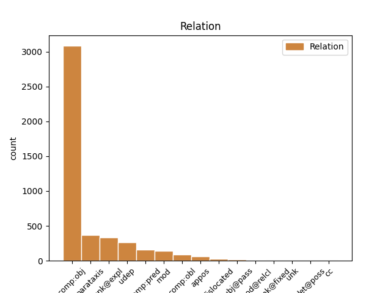
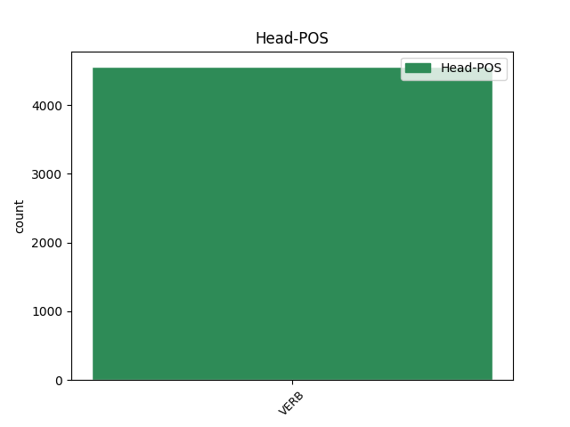
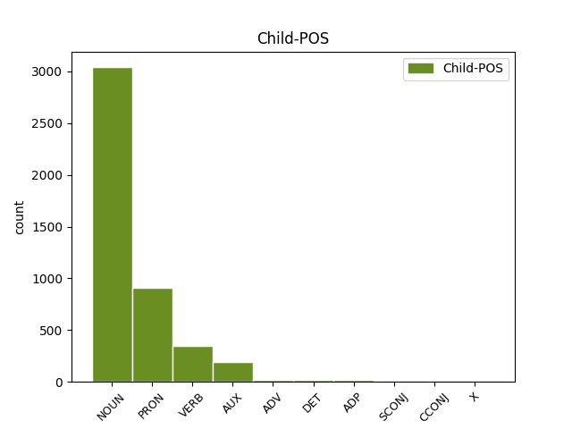

Distribution of features within this leaf



Agreement Rules sorted by frequency.
- When the dependent token is the direct object complements(comp:obj) of the head token, and the head token is VERB and the dependent token is NOUN.
1 Questo _ _ _ _ 0 _ _ _
2 Premio _ _ _ _ 0 _ _ _
3 che _ _ _ _ 0 _ _ _
4 non _ _ _ _ 0 _ _ _
5 avrà _ _ _ _ 0 _ _ _
6 sede _ _ _ _ 0 _ _ _
7 fissa _ _ _ _ 0 _ _ _
8 né _ _ _ _ 0 _ _ _
9 statuto _ _ _ _ 0 _ _ _
10 né _ _ _ _ 0 _ _ _
11 bando _ _ _ _ 0 _ _ _
12 di _ _ _ _ 0 _ _ _
13 concorso _ _ _ _ 0 _ _ _
14 sarà _ _ _ _ 0 _ _ _
15 dotato _ _ _ _ 0 _ _ _
16 di _ _ _ _ 0 _ _ _
17 una _ _ _ _ 0 _ _ _
18 somma _ _ _ _ 0 _ _ _
19 di _ _ _ _ 0 _ _ _
20 denaro _ _ _ _ 0 _ _ _
21 con _ _ _ _ 0 _ _ _
22 la _ _ _ _ 0 _ _ _
23 quale _ _ _ _ 0 _ _ _
24 un _ _ _ _ 0 _ _ _
25 gruppo _ _ _ _ 0 _ _ _
26 di _ _ _ _ 0 _ _ _
27 amici _ _ _ _ 0 _ _ _
28 accoglierà accogliere VERB V Mood=Ind|Number=Sing|Person=3|Tense=Fut|VerbForm=Fin 0 _ _ _
29 un' _ _ _ _ 0 _ _ _
30 opera opera NOUN S Gender=Fem|Number=Sing 28 comp:obj _ _
31 o _ _ _ _ 0 _ _ _
32 un _ _ _ _ 0 _ _ _
33 gesto _ _ _ _ 0 _ _ _
34 o _ _ _ _ 0 _ _ _
35 un _ _ _ _ 0 _ _ _
36 evento _ _ _ _ 0 _ _ _
37 di _ _ _ _ 0 _ _ _
38 cultura _ _ _ _ 0 _ _ _
39 che _ _ _ _ 0 _ _ _
40 Elsa _ _ _ _ 0 _ _ _
41 Morante _ _ _ _ 0 _ _ _
42 avrebbe _ _ _ _ 0 _ _ _
43 apprezzato _ _ _ _ 0 _ _ _
44 . _ _ _ _ 0 _ _ _
1 Da _ _ _ _ 0 _ _ _
2 là _ _ _ _ 0 _ _ _
3 , _ _ _ _ 0 _ _ _
4 i _ _ _ _ 0 _ _ _
5 gialli _ _ _ _ 0 _ _ _
6 treni _ _ _ _ 0 _ _ _
7 ci ci PRON PC Clitic=Yes|Number=Plur|Person=1|PronType=Prs 8 comp:obj _ _
8 porteranno portare VERB V Mood=Ind|Number=Plur|Person=3|Tense=Fut|VerbForm=Fin 0 _ _ _
9 a _ _ _ _ 0 _ _ _
10 i _ _ _ _ 0 _ _ _
11 quartieri _ _ _ _ 0 _ _ _
12 di _ _ _ _ 0 _ _ _
13 l' _ _ _ _ 0 _ _ _
14 Est _ _ _ _ 0 _ _ _
15 risanati _ _ _ _ 0 _ _ _
16 fino _ _ _ _ 0 _ _ _
17 a _ _ _ _ 0 _ _ _
18 le _ _ _ _ 0 _ _ _
19 vecchie _ _ _ _ 0 _ _ _
20 zone _ _ _ _ 0 _ _ _
21 di _ _ _ _ 0 _ _ _
22 palazzine _ _ _ _ 0 _ _ _
23 liberty _ _ _ _ 0 _ _ _
24 o _ _ _ _ 0 _ _ _
25 Jugendstihl _ _ _ _ 0 _ _ _
26 rese _ _ _ _ 0 _ _ _
27 vivacemente _ _ _ _ 0 _ _ _
28 " _ _ _ _ 0 _ _ _
29 Multikulti _ _ _ _ 0 _ _ _
30 " _ _ _ _ 0 _ _ _
31 , _ _ _ _ 0 _ _ _
32 multiculturali _ _ _ _ 0 _ _ _
33 , _ _ _ _ 0 _ _ _
34 grazie _ _ _ _ 0 _ _ _
35 a _ _ _ _ 0 _ _ _
36 ristorazione _ _ _ _ 0 _ _ _
37 e _ _ _ _ 0 _ _ _
38 negozi _ _ _ _ 0 _ _ _
39 creati _ _ _ _ 0 _ _ _
40 da _ _ _ _ 0 _ _ _
41 la _ _ _ _ 0 _ _ _
42 fantasia _ _ _ _ 0 _ _ _
43 di _ _ _ _ 0 _ _ _
44 il _ _ _ _ 0 _ _ _
45 nuovo _ _ _ _ 0 _ _ _
46 ceto _ _ _ _ 0 _ _ _
47 medio _ _ _ _ 0 _ _ _
48 turco _ _ _ _ 0 _ _ _
49 . _ _ _ _ 0 _ _ _
1 Vi vi PRON PC Clitic=Yes|Number=Plur|Person=2|PronType=Prs 2 unk@expl _ _
2 sorgeranno sorgere VERB V Mood=Ind|Number=Plur|Person=3|Tense=Fut|VerbForm=Fin 0 _ _ _
3 il _ _ _ _ 0 _ _ _
4 centro _ _ _ _ 0 _ _ _
5 stampa _ _ _ _ 0 _ _ _
6 , _ _ _ _ 0 _ _ _
7 ma _ _ _ _ 0 _ _ _
8 anche _ _ _ _ 0 _ _ _
9 palazzi _ _ _ _ 0 _ _ _
10 per _ _ _ _ 0 _ _ _
11 abitazioni _ _ _ _ 0 _ _ _
12 . _ _ _ _ 0 _ _ _
1 Da _ _ _ _ 0 _ _ _
2 là _ _ _ _ 0 _ _ _
3 , _ _ _ _ 0 _ _ _
4 i _ _ _ _ 0 _ _ _
5 gialli _ _ _ _ 0 _ _ _
6 treni _ _ _ _ 0 _ _ _
7 ci _ _ _ _ 0 _ _ _
8 porteranno _ _ _ _ 0 _ _ _
9 a _ _ _ _ 0 _ _ _
10 i _ _ _ _ 0 _ _ _
11 quartieri _ _ _ _ 0 _ _ _
12 di _ _ _ _ 0 _ _ _
13 l' _ _ _ _ 0 _ _ _
14 Est _ _ _ _ 0 _ _ _
15 risanati _ _ _ _ 0 _ _ _
16 fino _ _ _ _ 0 _ _ _
17 a _ _ _ _ 0 _ _ _
18 le _ _ _ _ 0 _ _ _
19 vecchie _ _ _ _ 0 _ _ _
20 zone _ _ _ _ 0 _ _ _
21 di _ _ _ _ 0 _ _ _
22 palazzine _ _ _ _ 0 _ _ _
23 liberty _ _ _ _ 0 _ _ _
24 o _ _ _ _ 0 _ _ _
25 Jugendstihl _ _ _ _ 0 _ _ _
26 rese rendere VERB V Gender=Fem|Number=Plur|Tense=Past|VerbForm=Part 0 _ _ _
27 vivacemente _ _ _ _ 0 _ _ _
28 " _ _ _ _ 0 _ _ _
29 Multikulti _ _ _ _ 0 _ _ _
30 " _ _ _ _ 0 _ _ _
31 , _ _ _ _ 0 _ _ _
32 multiculturali _ _ _ _ 0 _ _ _
33 , _ _ _ _ 0 _ _ _
34 grazie grazie NOUN S Gender=Fem|Number=Plur 26 udep _ _
35 a _ _ _ _ 0 _ _ _
36 ristorazione _ _ _ _ 0 _ _ _
37 e _ _ _ _ 0 _ _ _
38 negozi _ _ _ _ 0 _ _ _
39 creati _ _ _ _ 0 _ _ _
40 da _ _ _ _ 0 _ _ _
41 la _ _ _ _ 0 _ _ _
42 fantasia _ _ _ _ 0 _ _ _
43 di _ _ _ _ 0 _ _ _
44 il _ _ _ _ 0 _ _ _
45 nuovo _ _ _ _ 0 _ _ _
46 ceto _ _ _ _ 0 _ _ _
47 medio _ _ _ _ 0 _ _ _
48 turco _ _ _ _ 0 _ _ _
49 . _ _ _ _ 0 _ _ _
1 L' _ _ _ _ 0 _ _ _
2 Australia _ _ _ _ 0 _ _ _
3 boicotta boicottare VERB V Mood=Ind|Number=Sing|Person=3|Tense=Pres|VerbForm=Fin 0 _ _ _
4 Air _ _ _ _ 0 _ _ _
5 France _ _ _ _ 0 _ _ _
6 non _ _ _ _ 0 _ _ _
7 vola volare VERB V Mood=Ind|Number=Sing|Person=3|Tense=Pres|VerbForm=Fin 3 parataxis _ SpaceAfter=No
8 . _ _ _ _ 0 _ _ _
1 L' _ _ _ _ 0 _ _ _
2 esplosione _ _ _ _ 0 _ _ _
3 e _ _ _ _ 0 _ _ _
4 il _ _ _ _ 0 _ _ _
5 successivo _ _ _ _ 0 _ _ _
6 incendio _ _ _ _ 0 _ _ _
7 di _ _ _ _ 0 _ _ _
8 uno _ _ _ _ 0 _ _ _
9 di _ _ _ _ 0 _ _ _
10 i _ _ _ _ 0 _ _ _
11 reattori _ _ _ _ 0 _ _ _
12 di _ _ _ _ 0 _ _ _
13 l' _ _ _ _ 0 _ _ _
14 impianto _ _ _ _ 0 _ _ _
15 ucraino _ _ _ _ 0 _ _ _
16 provocò _ _ _ _ 0 _ _ _
17 una _ _ _ _ 0 _ _ _
18 gigantesca _ _ _ _ 0 _ _ _
19 nube _ _ _ _ 0 _ _ _
20 radioattiva _ _ _ _ 0 _ _ _
21 che _ _ _ _ 0 _ _ _
22 attraversò _ _ _ _ 0 _ _ _
23 l' _ _ _ _ 0 _ _ _
24 Europa _ _ _ _ 0 _ _ _
25 e _ _ _ _ 0 _ _ _
26 centinaia _ _ _ _ 0 _ _ _
27 di _ _ _ _ 0 _ _ _
28 migliaia _ _ _ _ 0 _ _ _
29 di _ _ _ _ 0 _ _ _
30 persone _ _ _ _ 0 _ _ _
31 furono _ _ _ _ 0 _ _ _
32 contaminate _ _ _ _ 0 _ _ _
33 in _ _ _ _ 0 _ _ _
34 la _ _ _ _ 0 _ _ _
35 regione _ _ _ _ 0 _ _ _
36 che _ _ _ _ 0 _ _ _
37 a _ _ _ _ 0 _ _ _
38 il _ _ _ _ 0 _ _ _
39 tempo _ _ _ _ 0 _ _ _
40 faceva fare VERB V Mood=Ind|Number=Sing|Person=3|Tense=Imp|VerbForm=Fin 0 _ _ _
41 parte parte NOUN S Gender=Fem|Number=Sing 40 comp:pred _ _
42 di _ _ _ _ 0 _ _ _
43 l' _ _ _ _ 0 _ _ _
44 Unione _ _ _ _ 0 _ _ _
45 Sovietica _ _ _ _ 0 _ _ _
46 . _ _ _ _ 0 _ _ _
1 " _ _ _ _ 0 _ _ _
2 l' _ _ _ _ 0 _ _ _
3 Unione _ _ _ _ 0 _ _ _
4 Sovietica _ _ _ _ 0 _ _ _
5 non _ _ _ _ 0 _ _ _
6 esiste esistere VERB V Mood=Ind|Number=Sing|Person=3|Tense=Pres|VerbForm=Fin 0 _ _ _
7 più _ _ _ _ 0 _ _ _
8 " _ _ _ _ 0 _ _ _
9 , _ _ _ _ 0 _ _ _
10 ha avere AUX VA Mood=Ind|Number=Sing|Person=3|Tense=Pres|VerbForm=Fin 6 parataxis _ _
11 risposto _ _ _ _ 0 _ _ _
12 D' _ _ _ _ 0 _ _ _
13 Alema _ _ _ _ 0 _ _ _
14 conquistando _ _ _ _ 0 _ _ _
15 si _ _ _ _ 0 _ _ _
16 gli _ _ _ _ 0 _ _ _
17 applausi _ _ _ _ 0 _ _ _
18 di _ _ _ _ 0 _ _ _
19 il _ _ _ _ 0 _ _ _
20 pubblico _ _ _ _ 0 _ _ _
21 . _ _ _ _ 0 _ _ _
1 Deve _ _ _ _ 0 _ _ _
2 aver _ _ _ _ 0 _ _ _
3 passato _ _ _ _ 0 _ _ _
4 davvero _ _ _ _ 0 _ _ _
5 pessime _ _ _ _ 0 _ _ _
6 giornate _ _ _ _ 0 _ _ _
7 , _ _ _ _ 0 _ _ _
8 l' _ _ _ _ 0 _ _ _
9 ex _ _ _ _ 0 _ _ _
10 amministratore _ _ _ _ 0 _ _ _
11 di _ _ _ _ 0 _ _ _
12 la _ _ _ _ 0 _ _ _
13 Maa _ _ _ _ 0 _ _ _
14 , _ _ _ _ 0 _ _ _
15 visto vedere VERB V Gender=Masc|Number=Sing|Tense=Past|VerbForm=Part 0 _ _ _
16 che _ _ _ _ 0 _ _ _
17 commette commettere VERB V Mood=Ind|Number=Sing|Person=3|Tense=Pres|VerbForm=Fin 15 mod _ _
18 almeno _ _ _ _ 0 _ _ _
19 un' _ _ _ _ 0 _ _ _
20 imprudenza _ _ _ _ 0 _ _ _
21 finita _ _ _ _ 0 _ _ _
22 a _ _ _ _ 0 _ _ _
23 gli _ _ _ _ 0 _ _ _
24 atti _ _ _ _ 0 _ _ _
25 di _ _ _ _ 0 _ _ _
26 l' _ _ _ _ 0 _ _ _
27 inchiesta _ _ _ _ 0 _ _ _
28 : _ _ _ _ 0 _ _ _
29 usa _ _ _ _ 0 _ _ _
30 con _ _ _ _ 0 _ _ _
31 frequenza _ _ _ _ 0 _ _ _
32 adolescenziale _ _ _ _ 0 _ _ _
33 il _ _ _ _ 0 _ _ _
34 telefono _ _ _ _ 0 _ _ _
35 . _ _ _ _ 0 _ _ _
1 Ma _ _ _ _ 0 _ _ _
2 come _ _ _ _ 0 _ _ _
3 , _ _ _ _ 0 _ _ _
4 nulla _ _ _ _ 0 _ _ _
5 vi vi PRON PC Clitic=Yes|Number=Plur|Person=2|PronType=Prs 6 comp:obl _ _
6 ricordano ricordare VERB V Mood=Ind|Number=Plur|Person=3|Tense=Pres|VerbForm=Fin 0 _ _ _
7 i _ _ _ _ 0 _ _ _
8 due _ _ _ _ 0 _ _ _
9 edifici _ _ _ _ 0 _ _ _
10 in _ _ _ _ 0 _ _ _
11 stile _ _ _ _ 0 _ _ _
12 Bauhaus _ _ _ _ 0 _ _ _
13 a _ _ _ _ 0 _ _ _
14 sinistra _ _ _ _ 0 _ _ _
15 , _ _ _ _ 0 _ _ _
16 che _ _ _ _ 0 _ _ _
17 Peter _ _ _ _ 0 _ _ _
18 Behrens _ _ _ _ 0 _ _ _
19 edificò _ _ _ _ 0 _ _ _
20 in _ _ _ _ 0 _ _ _
21 il _ _ _ _ 0 _ _ _
22 trentadue _ _ _ _ 0 _ _ _
23 , _ _ _ _ 0 _ _ _
24 ultimo _ _ _ _ 0 _ _ _
25 anno _ _ _ _ 0 _ _ _
26 di _ _ _ _ 0 _ _ _
27 libertà _ _ _ _ 0 _ _ _
28 , _ _ _ _ 0 _ _ _
29 o _ _ _ _ 0 _ _ _
30 la _ _ _ _ 0 _ _ _
31 torre _ _ _ _ 0 _ _ _
32 tv _ _ _ _ 0 _ _ _
33 ? _ _ _ _ 0 _ _ _
1 non _ _ _ _ 0 _ _ _
2 è _ _ _ _ 0 _ _ _
3 che _ _ _ _ 0 _ _ _
4 non _ _ _ _ 0 _ _ _
5 lo _ _ _ _ 0 _ _ _
6 avessi _ _ _ _ 0 _ _ _
7 prima _ _ _ _ 0 _ _ _
8 , _ _ _ _ 0 _ _ _
9 posso _ _ _ _ 0 _ _ _
10 dire _ _ _ _ 0 _ _ _
11 che _ _ _ _ 0 _ _ _
12 ne _ _ _ _ 0 _ _ _
13 ho avere VERB V Mood=Ind|Number=Sing|Person=1|Tense=Pres|VerbForm=Fin 0 _ _ _
14 un _ _ _ _ 0 _ _ _
15 pò pò PRON PI Number=Sing|PronType=Ind 13 udep _ _
16 di _ _ _ _ 0 _ _ _
17 più _ _ _ _ 0 _ _ _
18 " _ _ _ _ 0 _ _ _
19 . _ _ _ _ 0 _ _ _
1 Le _ _ _ _ 0 _ _ _
2 novità _ _ _ _ 0 _ _ _
3 sono essere VERB V Mood=Ind|Number=Plur|Person=3|Tense=Pres|VerbForm=Fin 0 _ _ _
4 : _ _ _ _ 0 _ _ _
5 nuovi _ _ _ _ 0 _ _ _
6 provvedimenti provvedimento NOUN S Gender=Masc|Number=Plur 3 appos _ _
7 di _ _ _ _ 0 _ _ _
8 i _ _ _ _ 0 _ _ _
9 giudici _ _ _ _ 0 _ _ _
10 in _ _ _ _ 0 _ _ _
11 arrivo _ _ _ _ 0 _ _ _
12 . _ _ _ _ 0 _ _ _
1 Pisaniello _ _ _ _ 0 _ _ _
2 si _ _ _ _ 0 _ _ _
3 è _ _ _ _ 0 _ _ _
4 costituito _ _ _ _ 0 _ _ _
5 ieri _ _ _ _ 0 _ _ _
6 a _ _ _ _ 0 _ _ _
7 Torino _ _ _ _ 0 _ _ _
8 in _ _ _ _ 0 _ _ _
9 l' _ _ _ _ 0 _ _ _
10 ufficio _ _ _ _ 0 _ _ _
11 di _ _ _ _ 0 _ _ _
12 il _ _ _ _ 0 _ _ _
13 pm _ _ _ _ 0 _ _ _
14 Luigi _ _ _ _ 0 _ _ _
15 Marini _ _ _ _ 0 _ _ _
16 che _ _ _ _ 0 _ _ _
17 indaga indagare VERB V Mood=Ind|Number=Sing|Person=3|Tense=Pres|VerbForm=Fin 0 _ _ _
18 su _ _ _ _ 0 _ _ _
19 i _ _ _ _ 0 _ _ _
20 ricchi _ _ _ _ 0 _ _ _
21 misteri _ _ _ _ 0 _ _ _
22 di _ _ _ _ 0 _ _ _
23 gli _ _ _ _ 0 _ _ _
24 sponsor _ _ _ _ 0 _ _ _
25 : _ _ _ _ 0 _ _ _
26 un _ _ _ _ 0 _ _ _
27 giro giro NOUN S Gender=Masc|Number=Sing 17 parataxis _ _
28 d' _ _ _ _ 0 _ _ _
29 affari _ _ _ _ 0 _ _ _
30 da _ _ _ _ 0 _ _ _
31 2000 _ _ _ _ 0 _ _ _
32 miliardi _ _ _ _ 0 _ _ _
33 l' _ _ _ _ 0 _ _ _
34 anno _ _ _ _ 0 _ _ _
35 cui _ _ _ _ 0 _ _ _
36 corrisponde _ _ _ _ 0 _ _ _
37 , _ _ _ _ 0 _ _ _
38 secondo _ _ _ _ 0 _ _ _
39 una _ _ _ _ 0 _ _ _
40 prima _ _ _ _ 0 _ _ _
41 stima _ _ _ _ 0 _ _ _
42 sommaria _ _ _ _ 0 _ _ _
43 , _ _ _ _ 0 _ _ _
44 un' _ _ _ _ 0 _ _ _
45 evasione _ _ _ _ 0 _ _ _
46 fiscale _ _ _ _ 0 _ _ _
47 da _ _ _ _ 0 _ _ _
48 mille _ _ _ _ 0 _ _ _
49 miliardi _ _ _ _ 0 _ _ _
50 . _ _ _ _ 0 _ _ _
1 " _ _ _ _ 0 _ _ _
2 caro _ _ _ _ 0 _ _ _
3 e _ _ _ _ 0 _ _ _
4 illustre _ _ _ _ 0 _ _ _
5 presidente _ _ _ _ 0 _ _ _
6 - _ _ _ _ 0 _ _ _
7 scrive _ _ _ _ 0 _ _ _
8 Almirante _ _ _ _ 0 _ _ _
9 - _ _ _ _ 0 _ _ _
10 spero sperare VERB V Mood=Ind|Number=Sing|Person=1|Tense=Pres|VerbForm=Fin 0 _ _ _
11 non _ _ _ _ 0 _ _ _
12 ti _ _ _ _ 0 _ _ _
13 dispiaccia dispiacere VERB V Mood=Ind|Number=Sing|Person=1|Tense=Pres|VerbForm=Fin 10 comp:obj _ _
14 se _ _ _ _ 0 _ _ _
15 per _ _ _ _ 0 _ _ _
16 la _ _ _ _ 0 _ _ _
17 prima _ _ _ _ 0 _ _ _
18 volta _ _ _ _ 0 _ _ _
19 ti _ _ _ _ 0 _ _ _
20 giungono _ _ _ _ 0 _ _ _
21 i _ _ _ _ 0 _ _ _
22 miei _ _ _ _ 0 _ _ _
23 affettuosi _ _ _ _ 0 _ _ _
24 auguri _ _ _ _ 0 _ _ _
25 di _ _ _ _ 0 _ _ _
26 buon _ _ _ _ 0 _ _ _
27 natale _ _ _ _ 0 _ _ _
28 . _ _ _ _ 0 _ _ _
1 La _ _ _ _ 0 _ _ _
2 Authority _ _ _ _ 0 _ _ _
3 per _ _ _ _ 0 _ _ _
4 Berlino _ _ _ _ 0 _ _ _
5 spera sperare VERB V Mood=Ind|Number=Sing|Person=3|Tense=Pres|VerbForm=Fin 0 _ _ _
6 molto molto ADV B Gender=Masc|Number=Sing 5 mod _ _
7 in _ _ _ _ 0 _ _ _
8 investimenti _ _ _ _ 0 _ _ _
9 per _ _ _ _ 0 _ _ _
10 spettacolo _ _ _ _ 0 _ _ _
11 e _ _ _ _ 0 _ _ _
12 cultura _ _ _ _ 0 _ _ _
13 , _ _ _ _ 0 _ _ _
14 e _ _ _ _ 0 _ _ _
15 non _ _ _ _ 0 _ _ _
16 disdegna _ _ _ _ 0 _ _ _
17 di _ _ _ _ 0 _ _ _
18 veder _ _ _ _ 0 _ _ _
19 sfilare _ _ _ _ 0 _ _ _
20 qui _ _ _ _ 0 _ _ _
21 gli _ _ _ _ 0 _ _ _
22 enormi _ _ _ _ 0 _ _ _
23 , _ _ _ _ 0 _ _ _
24 colorati _ _ _ _ 0 _ _ _
25 cortei _ _ _ _ 0 _ _ _
26 di _ _ _ _ 0 _ _ _
27 Ravers _ _ _ _ 0 _ _ _
28 che _ _ _ _ 0 _ _ _
29 già _ _ _ _ 0 _ _ _
30 oggi _ _ _ _ 0 _ _ _
31 percorrono _ _ _ _ 0 _ _ _
32 pacifici _ _ _ _ 0 _ _ _
33 la _ _ _ _ 0 _ _ _
34 città _ _ _ _ 0 _ _ _
35 a _ _ _ _ 0 _ _ _
36 il _ _ _ _ 0 _ _ _
37 ritmo _ _ _ _ 0 _ _ _
38 Techno _ _ _ _ 0 _ _ _
39 . _ _ _ _ 0 _ _ _
1 L' _ _ _ _ 0 _ _ _
2 intera _ _ _ _ 0 _ _ _
3 isola _ _ _ _ 0 _ _ _
4 di _ _ _ _ 0 _ _ _
5 Tahiti _ _ _ _ 0 _ _ _
6 era _ _ _ _ 0 _ _ _
7 rimasta rimanere VERB V Gender=Fem|Number=Sing|Tense=Past|VerbForm=Part 0 _ _ _
8 bloccata bloccare VERB V Gender=Fem|Number=Sing|Tense=Past|VerbForm=Part 7 comp:pred _ _
9 per _ _ _ _ 0 _ _ _
10 tre _ _ _ _ 0 _ _ _
11 giorni _ _ _ _ 0 _ _ _
12 , _ _ _ _ 0 _ _ _
13 fino _ _ _ _ 0 _ _ _
14 a _ _ _ _ 0 _ _ _
15 la _ _ _ _ 0 _ _ _
16 partenza _ _ _ _ 0 _ _ _
17 di _ _ _ _ 0 _ _ _
18 la _ _ _ _ 0 _ _ _
19 nave _ _ _ _ 0 _ _ _
20 " _ _ _ _ 0 _ _ _
21 Verde _ _ _ _ 0 _ _ _
22 " _ _ _ _ 0 _ _ _
23 in _ _ _ _ 0 _ _ _
24 direzione _ _ _ _ 0 _ _ _
25 di _ _ _ _ 0 _ _ _
26 Mururoa _ _ _ _ 0 _ _ _
27 . _ _ _ _ 0 _ _ _
1 Ciclismo _ _ _ _ 0 _ _ _
2 - _ _ _ _ 0 _ _ _
3 Tour _ _ _ _ 0 _ _ _
4 De _ _ _ _ 0 _ _ _
5 France _ _ _ _ 0 _ _ _
6 - _ _ _ _ 0 _ _ _
7 12-mo _ _ _ _ 0 _ _ _
8 tappa tappa NOUN S Gender=Fem|Number=Sing 9 subj@pass _ _
9 vinta vincere VERB V Gender=Fem|Number=Sing|Tense=Past|VerbForm=Part 0 _ _ _
10 da _ _ _ _ 0 _ _ _
11 il _ _ _ _ 0 _ _ _
12 corridore _ _ _ _ 0 _ _ _
13 francese _ _ _ _ 0 _ _ _
14 Podenzana _ _ _ _ 0 _ _ _
15 . _ _ _ _ 0 _ _ _
1 E _ _ _ _ 0 _ _ _
2 tra _ _ _ _ 0 _ _ _
3 questi _ _ _ _ 0 _ _ _
4 , _ _ _ _ 0 _ _ _
5 c' _ _ _ _ 0 _ _ _
6 è essere VERB V Mood=Ind|Number=Sing|Person=3|Tense=Pres|VerbForm=Fin 0 _ _ _
7 chi _ _ _ _ 0 _ _ _
8 ha avere AUX VA Mood=Ind|Number=Sing|Person=3|Tense=Pres|VerbForm=Fin 6 comp:obj _ _
9 fornito _ _ _ _ 0 _ _ _
10 a _ _ _ _ 0 _ _ _
11 Salamone _ _ _ _ 0 _ _ _
12 informazioni _ _ _ _ 0 _ _ _
13 preziose _ _ _ _ 0 _ _ _
14 su _ _ _ _ 0 _ _ _
15 le _ _ _ _ 0 _ _ _
16 speranze _ _ _ _ 0 _ _ _
17 di _ _ _ _ 0 _ _ _
18 Gorrini _ _ _ _ 0 _ _ _
19 di _ _ _ _ 0 _ _ _
20 risalire _ _ _ _ 0 _ _ _
21 la _ _ _ _ 0 _ _ _
22 china _ _ _ _ 0 _ _ _
23 e _ _ _ _ 0 _ _ _
24 su _ _ _ _ 0 _ _ _
25 gli _ _ _ _ 0 _ _ _
26 aiuti _ _ _ _ 0 _ _ _
27 che _ _ _ _ 0 _ _ _
28 si _ _ _ _ 0 _ _ _
29 attendeva _ _ _ _ 0 _ _ _
30 . _ _ _ _ 0 _ _ _
1 Ma _ _ _ _ 0 _ _ _
2 fatta _ _ _ _ 0 _ _ _
3 la _ _ _ _ 0 _ _ _
4 tara _ _ _ _ 0 _ _ _
5 di _ _ _ _ 0 _ _ _
6 la _ _ _ _ 0 _ _ _
7 salute _ _ _ _ 0 _ _ _
8 , _ _ _ _ 0 _ _ _
9 il _ _ _ _ 0 _ _ _
10 raffreddore _ _ _ _ 0 _ _ _
11 non _ _ _ _ 0 _ _ _
12 maschera mascherare VERB V Mood=Ind|Number=Sing|Person=3|Tense=Pres|VerbForm=Fin 0 _ _ _
13 in _ _ _ _ 0 _ _ _
14 Matteuzzi _ _ _ _ 0 _ _ _
15 un _ _ _ _ 0 _ _ _
16 irreversibile _ _ _ _ 0 _ _ _
17 declino _ _ _ _ 0 _ _ _
18 di _ _ _ _ 0 _ _ _
19 la _ _ _ _ 0 _ _ _
20 voce _ _ _ _ 0 _ _ _
21 , _ _ _ _ 0 _ _ _
22 quasi _ _ _ _ 0 _ _ _
23 scomparsa _ _ _ _ 0 _ _ _
24 , _ _ _ _ 0 _ _ _
25 e _ _ _ _ 0 _ _ _
26 in _ _ _ _ 0 _ _ _
27 la _ _ _ _ 0 _ _ _
28 Jo _ _ _ _ 0 _ _ _
29 una _ _ _ _ 0 _ _ _
30 distanza distanza NOUN S Gender=Fem|Number=Sing 12 dislocated _ _
31 interpretativa _ _ _ _ 0 _ _ _
32 astrale _ _ _ _ 0 _ _ _
33 da _ _ _ _ 0 _ _ _
34 la _ _ _ _ 0 _ _ _
35 leggerezza _ _ _ _ 0 _ _ _
36 rossiniana _ _ _ _ 0 _ _ _
37 . _ _ _ _ 0 _ _ _
1 Al _ _ _ _ 0 _ _ _
2 tempo _ _ _ _ 0 _ _ _
3 stesso _ _ _ _ 0 _ _ _
4 occorre _ _ _ _ 0 _ _ _
5 che _ _ _ _ 0 _ _ _
6 Sarajevo _ _ _ _ 0 _ _ _
7 " _ _ _ _ 0 _ _ _
8 sia _ _ _ _ 0 _ _ _
9 realmente _ _ _ _ 0 _ _ _
10 protetta proteggere VERB V Gender=Fem|Number=Sing|Tense=Past|VerbForm=Part 0 _ _ _
11 e _ _ _ _ 0 _ _ _
12 pertanto _ _ _ _ 0 _ _ _
13 sia _ _ _ _ 0 _ _ _
14 garantita _ _ _ _ 0 _ _ _
15 la _ _ _ _ 0 _ _ _
16 via _ _ _ _ 0 _ _ _
17 d' _ _ _ _ 0 _ _ _
18 accesso _ _ _ _ 0 _ _ _
19 a _ _ _ _ 0 _ _ _
20 la _ _ _ _ 0 _ _ _
21 città _ _ _ _ 0 _ _ _
22 " _ _ _ _ 0 _ _ _
23 ( _ _ _ _ 0 _ _ _
24 leggi leggere VERB V Mood=Imp|Number=Sing|Person=2|Tense=Pres|VerbForm=Fin 10 appos _ SpaceAfter=No
25 : _ _ _ _ 0 _ _ _
26 la _ _ _ _ 0 _ _ _
27 strada _ _ _ _ 0 _ _ _
28 di _ _ _ _ 0 _ _ _
29 il _ _ _ _ 0 _ _ _
30 Monte _ _ _ _ 0 _ _ _
31 Igman _ _ _ _ 0 _ _ _
32 protetta _ _ _ _ 0 _ _ _
33 da _ _ _ _ 0 _ _ _
34 i _ _ _ _ 0 _ _ _
35 francesi _ _ _ _ 0 _ _ _
36 ) _ _ _ _ 0 _ _ _
37 . _ _ _ _ 0 _ _ _
1 " _ _ _ _ 0 _ _ _
2 non _ _ _ _ 0 _ _ _
3 sa sapere VERB V Mood=Ind|Number=Sing|Person=3|Tense=Pres|VerbForm=Fin 0 _ _ _
4 quello quello DET DD Gender=Masc|Number=Sing|PronType=Dem 3 comp:obj _ _
5 che _ _ _ _ 0 _ _ _
6 dice _ _ _ _ 0 _ _ _
7 , _ _ _ _ 0 _ _ _
8 nessun _ _ _ _ 0 _ _ _
9 partito _ _ _ _ 0 _ _ _
10 ci _ _ _ _ 0 _ _ _
11 condiziona _ _ _ _ 0 _ _ _
12 " _ _ _ _ 0 _ _ _
13 , _ _ _ _ 0 _ _ _
14 è _ _ _ _ 0 _ _ _
15 la _ _ _ _ 0 _ _ _
16 frase _ _ _ _ 0 _ _ _
17 che _ _ _ _ 0 _ _ _
18 con _ _ _ _ 0 _ _ _
19 più _ _ _ _ 0 _ _ _
20 insistenza _ _ _ _ 0 _ _ _
21 circola _ _ _ _ 0 _ _ _
22 ad _ _ _ _ 0 _ _ _
23 alta _ _ _ _ 0 _ _ _
24 voce _ _ _ _ 0 _ _ _
25 alla _ _ _ _ 0 _ _ _
26 Caritas _ _ _ _ 0 _ _ _
27 italiana _ _ _ _ 0 _ _ _
28 , _ _ _ _ 0 _ _ _
29 comunità _ _ _ _ 0 _ _ _
30 di _ _ _ _ 0 _ _ _
31 S _ _ _ _ 0 _ _ _
32 Egidio _ _ _ _ 0 _ _ _
33 , _ _ _ _ 0 _ _ _
34 a _ _ _ _ 0 _ _ _
35 la _ _ _ _ 0 _ _ _
36 Fivol _ _ _ _ 0 _ _ _
37 ( _ _ _ _ 0 _ _ _
38 fondazione _ _ _ _ 0 _ _ _
39 italiana _ _ _ _ 0 _ _ _
40 di _ _ _ _ 0 _ _ _
41 il _ _ _ _ 0 _ _ _
42 volontariato _ _ _ _ 0 _ _ _
43 ) _ _ _ _ 0 _ _ _
44 , _ _ _ _ 0 _ _ _
45 a _ _ _ _ 0 _ _ _
46 il _ _ _ _ 0 _ _ _
47 Mo _ _ _ _ 0 _ _ _
48 Vi _ _ _ _ 0 _ _ _
49 ( _ _ _ _ 0 _ _ _
50 movimento _ _ _ _ 0 _ _ _
51 di _ _ _ _ 0 _ _ _
52 il _ _ _ _ 0 _ _ _
53 volontariato _ _ _ _ 0 _ _ _
54 italiano _ _ _ _ 0 _ _ _
55 ) _ _ _ _ 0 _ _ _
56 , _ _ _ _ 0 _ _ _
57 a _ _ _ _ 0 _ _ _
58 il _ _ _ _ 0 _ _ _
59 gruppo _ _ _ _ 0 _ _ _
60 Abele _ _ _ _ 0 _ _ _
61 di _ _ _ _ 0 _ _ _
62 Don _ _ _ _ 0 _ _ _
63 Luigi _ _ _ _ 0 _ _ _
64 Ciotti _ _ _ _ 0 _ _ _
65 , _ _ _ _ 0 _ _ _
66 a _ _ _ _ 0 _ _ _
67 le _ _ _ _ 0 _ _ _
68 misericordie _ _ _ _ 0 _ _ _
69 , _ _ _ _ 0 _ _ _
70 gli _ _ _ _ 0 _ _ _
71 antichi _ _ _ _ 0 _ _ _
72 sodalizi _ _ _ _ 0 _ _ _
73 fiorentini _ _ _ _ 0 _ _ _
74 . _ _ _ _ 0 _ _ _
1 Perché _ _ _ _ 0 _ _ _
2 stavo _ _ _ _ 0 _ _ _
3 bene _ _ _ _ 0 _ _ _
4 e _ _ _ _ 0 _ _ _
5 perché _ _ _ _ 0 _ _ _
6 era _ _ _ _ 0 _ _ _
7 il _ _ _ _ 0 _ _ _
8 14 _ _ _ _ 0 _ _ _
9 luglio _ _ _ _ 0 _ _ _
10 , _ _ _ _ 0 _ _ _
11 ma _ _ _ _ 0 _ _ _
12 se _ _ _ _ 0 _ _ _
13 anche _ _ _ _ 0 _ _ _
14 era essere AUX VA Mood=Ind|Number=Sing|Person=3|Tense=Imp|VerbForm=Fin 20 mod _ _
15 il _ _ _ _ 0 _ _ _
16 13 _ _ _ _ 0 _ _ _
17 o _ _ _ _ 0 _ _ _
18 il _ _ _ _ 0 _ _ _
19 15 _ _ _ _ 0 _ _ _
20 partivo partire VERB V Mood=Ind|Number=Sing|Person=1|Tense=Imp|VerbForm=Fin 0 _ _ _
21 uguale _ _ _ _ 0 _ _ _
22 , _ _ _ _ 0 _ _ _
23 dice _ _ _ _ 0 _ _ _
24 il _ _ _ _ 0 _ _ _
25 figlio _ _ _ _ 0 _ _ _
26 , _ _ _ _ 0 _ _ _
27 annacquando _ _ _ _ 0 _ _ _
28 il _ _ _ _ 0 _ _ _
29 clima _ _ _ _ 0 _ _ _
30 da _ _ _ _ 0 _ _ _
31 grandeur _ _ _ _ 0 _ _ _
32 che _ _ _ _ 0 _ _ _
33 sta _ _ _ _ 0 _ _ _
34 montando _ _ _ _ 0 _ _ _
35 come _ _ _ _ 0 _ _ _
36 un _ _ _ _ 0 _ _ _
37 alzabandiera _ _ _ _ 0 _ _ _
38 . _ _ _ _ 0 _ _ _
1 Chi _ _ _ _ 0 _ _ _
2 lo _ _ _ _ 0 _ _ _
3 conosce conoscere VERB V Mood=Ind|Number=Sing|Person=3|Tense=Pres|VerbForm=Fin 5 mod@relcl _ _
4 lo _ _ _ _ 0 _ _ _
5 descrive descrivere VERB V Mood=Ind|Number=Sing|Person=3|Tense=Pres|VerbForm=Fin 0 _ _ _
6 come _ _ _ _ 0 _ _ _
7 un _ _ _ _ 0 _ _ _
8 segretario _ _ _ _ 0 _ _ _
9 generale _ _ _ _ 0 _ _ _
10 " _ _ _ _ 0 _ _ _
11 più _ _ _ _ 0 _ _ _
12 politico _ _ _ _ 0 _ _ _
13 che _ _ _ _ 0 _ _ _
14 amministratore _ _ _ _ 0 _ _ _
15 " _ _ _ _ 0 _ _ _
16 , _ _ _ _ 0 _ _ _
17 più _ _ _ _ 0 _ _ _
18 portato _ _ _ _ 0 _ _ _
19 cioè _ _ _ _ 0 _ _ _
20 a _ _ _ _ 0 _ _ _
21 la _ _ _ _ 0 _ _ _
22 costruzione _ _ _ _ 0 _ _ _
23 di _ _ _ _ 0 _ _ _
24 la _ _ _ _ 0 _ _ _
25 linea _ _ _ _ 0 _ _ _
26 di _ _ _ _ 0 _ _ _
27 politica _ _ _ _ 0 _ _ _
28 estera _ _ _ _ 0 _ _ _
29 che _ _ _ _ 0 _ _ _
30 a _ _ _ _ 0 _ _ _
31 la _ _ _ _ 0 _ _ _
32 gestione _ _ _ _ 0 _ _ _
33 . _ _ _ _ 0 _ _ _
1 La _ _ _ _ 0 _ _ _
2 prima _ _ _ _ 0 _ _ _
3 consiste consistere VERB V Mood=Ind|Number=Sing|Person=3|Tense=Pres|VerbForm=Fin 0 _ _ _
4 nel in ADP E Gender=Masc|Number=Sing 3 mod _ _
5 puntare _ _ _ _ 0 _ _ _
6 unicamente _ _ _ _ 0 _ _ _
7 su _ _ _ _ 0 _ _ _
8 quella _ _ _ _ 0 _ _ _
9 parte _ _ _ _ 0 _ _ _
10 di _ _ _ _ 0 _ _ _
11 il _ _ _ _ 0 _ _ _
12 settore _ _ _ _ 0 _ _ _
13 industriale _ _ _ _ 0 _ _ _
14 , _ _ _ _ 0 _ _ _
15 di _ _ _ _ 0 _ _ _
16 il _ _ _ _ 0 _ _ _
17 settore _ _ _ _ 0 _ _ _
18 agricolo _ _ _ _ 0 _ _ _
19 e _ _ _ _ 0 _ _ _
20 di _ _ _ _ 0 _ _ _
21 il _ _ _ _ 0 _ _ _
22 terziario _ _ _ _ 0 _ _ _
23 che _ _ _ _ 0 _ _ _
24 ha _ _ _ _ 0 _ _ _
25 già _ _ _ _ 0 _ _ _
26 saputo _ _ _ _ 0 _ _ _
27 por _ _ _ _ 0 _ _ _
28 si _ _ _ _ 0 _ _ _
29 a _ _ _ _ 0 _ _ _
30 il _ _ _ _ 0 _ _ _
31 più _ _ _ _ 0 _ _ _
32 alto _ _ _ _ 0 _ _ _
33 livello _ _ _ _ 0 _ _ _
34 di _ _ _ _ 0 _ _ _
35 la _ _ _ _ 0 _ _ _
36 capacità _ _ _ _ 0 _ _ _
37 competitiva _ _ _ _ 0 _ _ _
38 . _ _ _ _ 0 _ _ _
1 Ancora _ _ _ _ 0 _ _ _
2 contro _ _ _ _ 0 _ _ _
3 i _ _ _ _ 0 _ _ _
4 gay _ _ _ _ 0 _ _ _
5 - _ _ _ _ 0 _ _ _
6 Daniel _ _ _ _ 0 _ _ _
7 Passarella _ _ _ _ 0 _ _ _
8 , _ _ _ _ 0 _ _ _
9 Ct _ _ _ _ 0 _ _ _
10 di _ _ _ _ 0 _ _ _
11 l' _ _ _ _ 0 _ _ _
12 Argentina _ _ _ _ 0 _ _ _
13 , _ _ _ _ 0 _ _ _
14 insiste _ _ _ _ 0 _ _ _
15 : _ _ _ _ 0 _ _ _
16 se _ _ _ _ 0 _ _ _
17 scoprissi _ _ _ _ 0 _ _ _
18 tra _ _ _ _ 0 _ _ _
19 noi _ _ _ _ 0 _ _ _
20 un _ _ _ _ 0 _ _ _
21 gay _ _ _ _ 0 _ _ _
22 prenderei prendere VERB V Mood=Cnd|Number=Sing|Person=1|Tense=Pres|VerbForm=Fin 0 _ _ _
23 dei _ _ _ _ 0 _ _ _
24 provvedimenti _ _ _ _ 0 _ _ _
25 : _ _ _ _ 0 _ _ _
26 è essere AUX VA Mood=Ind|Number=Sing|Person=3|Tense=Pres|VerbForm=Fin 22 appos _ _
27 certo _ _ _ _ 0 _ _ _
28 che _ _ _ _ 0 _ _ _
29 per _ _ _ _ 0 _ _ _
30 gli _ _ _ _ 0 _ _ _
31 omosessuali _ _ _ _ 0 _ _ _
32 in _ _ _ _ 0 _ _ _
33 una _ _ _ _ 0 _ _ _
34 squadra _ _ _ _ 0 _ _ _
35 allenata _ _ _ _ 0 _ _ _
36 da _ _ _ _ 0 _ _ _
37 me _ _ _ _ 0 _ _ _
38 non _ _ _ _ 0 _ _ _
39 c' _ _ _ _ 0 _ _ _
40 è _ _ _ _ 0 _ _ _
41 posto _ _ _ _ 0 _ _ _
42 " _ _ _ _ 0 _ _ _
43 . _ _ _ _ 0 _ _ _
1 Drammatica _ _ _ _ 0 _ _ _
2 è _ _ _ _ 0 _ _ _
3 l' _ _ _ _ 0 _ _ _
4 impunità _ _ _ _ 0 _ _ _
5 di _ _ _ _ 0 _ _ _
6 le _ _ _ _ 0 _ _ _
7 stragi _ _ _ _ 0 _ _ _
8 le _ _ _ _ 0 _ _ _
9 cui _ _ _ _ 0 _ _ _
10 radici radice NOUN S Gender=Fem|Number=Plur 11 mod _ _
11 stanno stare VERB V Mood=Ind|Number=Plur|Person=3|Tense=Pres|VerbForm=Fin 0 _ _ _
12 in _ _ _ _ 0 _ _ _
13 l' _ _ _ _ 0 _ _ _
14 infedeltà _ _ _ _ 0 _ _ _
15 di _ _ _ _ 0 _ _ _
16 essenziali _ _ _ _ 0 _ _ _
17 apparati _ _ _ _ 0 _ _ _
18 di _ _ _ _ 0 _ _ _
19 lo _ _ _ _ 0 _ _ _
20 stato _ _ _ _ 0 _ _ _
21 e _ _ _ _ 0 _ _ _
22 in _ _ _ _ 0 _ _ _
23 le _ _ _ _ 0 _ _ _
24 collusioni _ _ _ _ 0 _ _ _
25 politiche _ _ _ _ 0 _ _ _
26 . _ _ _ _ 0 _ _ _
1 Il _ _ _ _ 0 _ _ _
2 meccanismo _ _ _ _ 0 _ _ _
3 non _ _ _ _ 0 _ _ _
4 è _ _ _ _ 0 _ _ _
5 stato _ _ _ _ 0 _ _ _
6 ancora _ _ _ _ 0 _ _ _
7 del _ _ _ _ 0 _ _ _
8 tutto _ _ _ _ 0 _ _ _
9 chiarito _ _ _ _ 0 _ _ _
10 , _ _ _ _ 0 _ _ _
11 se _ _ _ _ 0 _ _ _
12 a _ _ _ _ 0 _ _ _
13 " _ _ _ _ 0 _ _ _
14 totalizzatore _ _ _ _ 0 _ _ _
15 " _ _ _ _ 0 _ _ _
16 ( _ _ _ _ 0 _ _ _
17 tipo _ _ _ _ 0 _ _ _
18 totocalcio _ _ _ _ 0 _ _ _
19 e _ _ _ _ 0 _ _ _
20 totogol _ _ _ _ 0 _ _ _
21 ) _ _ _ _ 0 _ _ _
22 o _ _ _ _ 0 _ _ _
23 più _ _ _ _ 0 _ _ _
24 vicino _ _ _ _ 0 _ _ _
25 invece _ _ _ _ 0 _ _ _
26 a _ _ _ _ 0 _ _ _
27 la _ _ _ _ 0 _ _ _
28 martingala _ _ _ _ 0 _ _ _
29 , _ _ _ _ 0 _ _ _
30 a _ _ _ _ 0 _ _ _
31 il _ _ _ _ 0 _ _ _
32 tipo _ _ _ _ 0 _ _ _
33 di _ _ _ _ 0 _ _ _
34 scommessa _ _ _ _ 0 _ _ _
35 cioè _ _ _ _ 0 _ _ _
36 che _ _ _ _ 0 _ _ _
37 in _ _ _ _ 0 _ _ _
38 questo _ _ _ _ 0 _ _ _
39 momento _ _ _ _ 0 _ _ _
40 è _ _ _ _ 0 _ _ _
41 praticabile _ _ _ _ 0 _ _ _
42 solo _ _ _ _ 0 _ _ _
43 presso _ _ _ _ 0 _ _ _
44 i _ _ _ _ 0 _ _ _
45 bookmakers _ _ _ _ 0 _ _ _
46 clandestini _ _ _ _ 0 _ _ _
47 o _ _ _ _ 0 _ _ _
48 quelli _ _ _ _ 0 _ _ _
49 inglesi _ _ _ _ 0 _ _ _
50 ( _ _ _ _ 0 _ _ _
51 e _ _ _ _ 0 _ _ _
52 in _ _ _ _ 0 _ _ _
53 cui _ _ _ _ 0 _ _ _
54 conosci conoscere VERB V Mood=Ind|Number=Sing|Person=2|Tense=Pres|VerbForm=Fin 0 _ _ _
55 subito _ _ _ _ 0 _ _ _
56 , _ _ _ _ 0 _ _ _
57 a _ _ _ _ 0 _ _ _
58 il _ _ _ _ 0 _ _ _
59 momento _ _ _ _ 0 _ _ _
60 di _ _ _ _ 0 _ _ _
61 la _ _ _ _ 0 _ _ _
62 puntata _ _ _ _ 0 _ _ _
63 , _ _ _ _ 0 _ _ _
64 quanto quanto SCONJ CS Number=Sing 54 comp:obj _ _
65 sarà _ _ _ _ 0 _ _ _
66 l' _ _ _ _ 0 _ _ _
67 eventuale _ _ _ _ 0 _ _ _
68 vincita _ _ _ _ 0 _ _ _
69 ) _ _ _ _ 0 _ _ _
70 . _ _ _ _ 0 _ _ _
1 È _ _ _ _ 0 _ _ _
2 un _ _ _ _ 0 _ _ _
3 caposcuola _ _ _ _ 0 _ _ _
4 , _ _ _ _ 0 _ _ _
5 un _ _ _ _ 0 _ _ _
6 guru _ _ _ _ 0 _ _ _
7 , _ _ _ _ 0 _ _ _
8 sempre _ _ _ _ 0 _ _ _
9 suo _ _ _ _ 0 _ _ _
10 malgrado _ _ _ _ 0 _ _ _
11 , _ _ _ _ 0 _ _ _
12 perché _ _ _ _ 0 _ _ _
13 non _ _ _ _ 0 _ _ _
14 si _ _ _ _ 0 _ _ _
15 sente sentire VERB V Mood=Ind|Number=Sing|Person=3|Tense=Pres|VerbForm=Fin 0 _ _ _
16 divo _ _ _ _ 0 _ _ _
17 ma _ _ _ _ 0 _ _ _
18 maestro _ _ _ _ 0 _ _ _
19 , _ _ _ _ 0 _ _ _
20 e _ _ _ _ 0 _ _ _
21 forse _ _ _ _ 0 _ _ _
22 neanche _ _ _ _ 0 _ _ _
23 quello quello PRON PD Gender=Masc|Number=Sing|PronType=Dem 15 dislocated _ SpaceAfter=No
24 . _ _ _ _ 0 _ _ _
1 " _ _ _ _ 0 _ _ _
2 non _ _ _ _ 0 _ _ _
3 sa _ _ _ _ 0 _ _ _
4 quello _ _ _ _ 0 _ _ _
5 che _ _ _ _ 0 _ _ _
6 dice _ _ _ _ 0 _ _ _
7 , _ _ _ _ 0 _ _ _
8 nessun _ _ _ _ 0 _ _ _
9 partito _ _ _ _ 0 _ _ _
10 ci _ _ _ _ 0 _ _ _
11 condiziona _ _ _ _ 0 _ _ _
12 " _ _ _ _ 0 _ _ _
13 , _ _ _ _ 0 _ _ _
14 è _ _ _ _ 0 _ _ _
15 la _ _ _ _ 0 _ _ _
16 frase _ _ _ _ 0 _ _ _
17 che _ _ _ _ 0 _ _ _
18 con _ _ _ _ 0 _ _ _
19 più _ _ _ _ 0 _ _ _
20 insistenza _ _ _ _ 0 _ _ _
21 circola circolare VERB V Mood=Ind|Number=Sing|Person=3|Tense=Pres|VerbForm=Fin 0 _ _ _
22 ad _ _ _ _ 0 _ _ _
23 alta _ _ _ _ 0 _ _ _
24 voce _ _ _ _ 0 _ _ _
25 alla a ADP E Gender=Fem|Number=Sing 21 udep _ _
26 Caritas _ _ _ _ 0 _ _ _
27 italiana _ _ _ _ 0 _ _ _
28 , _ _ _ _ 0 _ _ _
29 comunità _ _ _ _ 0 _ _ _
30 di _ _ _ _ 0 _ _ _
31 S _ _ _ _ 0 _ _ _
32 Egidio _ _ _ _ 0 _ _ _
33 , _ _ _ _ 0 _ _ _
34 a _ _ _ _ 0 _ _ _
35 la _ _ _ _ 0 _ _ _
36 Fivol _ _ _ _ 0 _ _ _
37 ( _ _ _ _ 0 _ _ _
38 fondazione _ _ _ _ 0 _ _ _
39 italiana _ _ _ _ 0 _ _ _
40 di _ _ _ _ 0 _ _ _
41 il _ _ _ _ 0 _ _ _
42 volontariato _ _ _ _ 0 _ _ _
43 ) _ _ _ _ 0 _ _ _
44 , _ _ _ _ 0 _ _ _
45 a _ _ _ _ 0 _ _ _
46 il _ _ _ _ 0 _ _ _
47 Mo _ _ _ _ 0 _ _ _
48 Vi _ _ _ _ 0 _ _ _
49 ( _ _ _ _ 0 _ _ _
50 movimento _ _ _ _ 0 _ _ _
51 di _ _ _ _ 0 _ _ _
52 il _ _ _ _ 0 _ _ _
53 volontariato _ _ _ _ 0 _ _ _
54 italiano _ _ _ _ 0 _ _ _
55 ) _ _ _ _ 0 _ _ _
56 , _ _ _ _ 0 _ _ _
57 a _ _ _ _ 0 _ _ _
58 il _ _ _ _ 0 _ _ _
59 gruppo _ _ _ _ 0 _ _ _
60 Abele _ _ _ _ 0 _ _ _
61 di _ _ _ _ 0 _ _ _
62 Don _ _ _ _ 0 _ _ _
63 Luigi _ _ _ _ 0 _ _ _
64 Ciotti _ _ _ _ 0 _ _ _
65 , _ _ _ _ 0 _ _ _
66 a _ _ _ _ 0 _ _ _
67 le _ _ _ _ 0 _ _ _
68 misericordie _ _ _ _ 0 _ _ _
69 , _ _ _ _ 0 _ _ _
70 gli _ _ _ _ 0 _ _ _
71 antichi _ _ _ _ 0 _ _ _
72 sodalizi _ _ _ _ 0 _ _ _
73 fiorentini _ _ _ _ 0 _ _ _
74 . _ _ _ _ 0 _ _ _
1 Figurar _ _ _ _ 0 _ _ _
2 si _ _ _ _ 0 _ _ _
3 che _ _ _ _ 0 _ _ _
4 , _ _ _ _ 0 _ _ _
5 per _ _ _ _ 0 _ _ _
6 ora _ _ _ _ 0 _ _ _
7 , _ _ _ _ 0 _ _ _
8 a _ _ _ _ 0 _ _ _
9 il _ _ _ _ 0 _ _ _
10 dipartimento _ _ _ _ 0 _ _ _
11 archeologia _ _ _ _ 0 _ _ _
12 subacquea _ _ _ _ 0 _ _ _
13 si _ _ _ _ 0 _ _ _
14 rifiutano _ _ _ _ 0 _ _ _
15 persino _ _ _ _ 0 _ _ _
16 di _ _ _ _ 0 _ _ _
17 iscrivere _ _ _ _ 0 _ _ _
18 la _ _ _ _ 0 _ _ _
19 " _ _ _ _ 0 _ _ _
20 dama _ _ _ _ 0 _ _ _
21 " _ _ _ _ 0 _ _ _
22 a _ _ _ _ 0 _ _ _
23 una _ _ _ _ 0 _ _ _
24 delle _ _ _ _ 0 _ _ _
25 due _ _ _ _ 0 _ _ _
26 grandi _ _ _ _ 0 _ _ _
27 " _ _ _ _ 0 _ _ _
28 squadre _ _ _ _ 0 _ _ _
29 " _ _ _ _ 0 _ _ _
30 che _ _ _ _ 0 _ _ _
31 raggruppano raggruppare VERB V Mood=Ind|Number=Plur|Person=3|Tense=Pres|VerbForm=Fin 0 _ _ _
32 le _ _ _ _ 0 _ _ _
33 statue _ _ _ _ 0 _ _ _
34 in _ _ _ _ 0 _ _ _
35 bronzo _ _ _ _ 0 _ _ _
36 : _ _ _ _ 0 _ _ _
37 quelle quello PRON PD Gender=Fem|Number=Plur|PronType=Dem 31 appos _ _
38 a _ _ _ _ 0 _ _ _
39 cera _ _ _ _ 0 _ _ _
40 persa _ _ _ _ 0 _ _ _
41 o _ _ _ _ 0 _ _ _
42 quelle _ _ _ _ 0 _ _ _
43 battute _ _ _ _ 0 _ _ _
44 . _ _ _ _ 0 _ _ _
1 D' _ _ _ _ 0 _ _ _
2 altra _ _ _ _ 0 _ _ _
3 parte _ _ _ _ 0 _ _ _
4 , _ _ _ _ 0 _ _ _
5 i _ _ _ _ 0 _ _ _
6 ritiri _ _ _ _ 0 _ _ _
7 da _ _ _ _ 0 _ _ _
8 i _ _ _ _ 0 _ _ _
9 magazzini _ _ _ _ 0 _ _ _
10 di _ _ _ _ 0 _ _ _
11 la _ _ _ _ 0 _ _ _
12 borsa _ _ _ _ 0 _ _ _
13 appaiono apparire VERB V Mood=Ind|Number=Plur|Person=3|Tense=Pres|VerbForm=Fin 0 _ _ _
14 anch' _ _ _ _ 0 _ _ _
15 essi essi PRON PE Gender=Masc|Number=Plur|Person=3|PronType=Prs 13 comp:pred _ _
16 in _ _ _ _ 0 _ _ _
17 diminuzione _ _ _ _ 0 _ _ _
18 , _ _ _ _ 0 _ _ _
19 ora _ _ _ _ 0 _ _ _
20 che _ _ _ _ 0 _ _ _
21 le _ _ _ _ 0 _ _ _
22 alte _ _ _ _ 0 _ _ _
23 quotazioni _ _ _ _ 0 _ _ _
24 cominciano _ _ _ _ 0 _ _ _
25 a _ _ _ _ 0 _ _ _
26 scoraggiare _ _ _ _ 0 _ _ _
27 gli _ _ _ _ 0 _ _ _
28 acquisti _ _ _ _ 0 _ _ _
29 immediati _ _ _ _ 0 _ _ _
30 di _ _ _ _ 0 _ _ _
31 gli _ _ _ _ 0 _ _ _
32 utilizzatori _ _ _ _ 0 _ _ _
33 . _ _ _ _ 0 _ _ _
1 Come _ _ _ _ 0 _ _ _
2 dire _ _ _ _ 0 _ _ _
3 che _ _ _ _ 0 _ _ _
4 i _ _ _ _ 0 _ _ _
5 bravi _ _ _ _ 0 _ _ _
6 coopteranno cooptare VERB V Mood=Ind|Number=Plur|Person=3|Tense=Fut|VerbForm=Fin 0 _ _ _
7 i _ _ _ _ 0 _ _ _
8 bravi _ _ _ _ 0 _ _ _
9 , _ _ _ _ 0 _ _ _
10 quelli quello PRON PD Gender=Masc|Number=Plur|PronType=Dem 6 parataxis _ _
11 che _ _ _ _ 0 _ _ _
12 bravi _ _ _ _ 0 _ _ _
13 non _ _ _ _ 0 _ _ _
14 sono _ _ _ _ 0 _ _ _
15 invece _ _ _ _ 0 _ _ _
16 no _ _ _ _ 0 _ _ _
17 . _ _ _ _ 0 _ _ _
1 Le _ _ _ _ 0 _ _ _
2 cassette _ _ _ _ 0 _ _ _
3 di _ _ _ _ 0 _ _ _
4 distribuzione _ _ _ _ 0 _ _ _
5 di _ _ _ _ 0 _ _ _
6 energia _ _ _ _ 0 _ _ _
7 e _ _ _ _ 0 _ _ _
8 di _ _ _ _ 0 _ _ _
9 acqua _ _ _ _ 0 _ _ _
10 sono _ _ _ _ 0 _ _ _
11 quasi _ _ _ _ 0 _ _ _
12 tutte _ _ _ _ 0 _ _ _
13 divelte _ _ _ _ 0 _ _ _
14 , _ _ _ _ 0 _ _ _
15 molte molto PRON PI Gender=Fem|Number=Plur|PronType=Ind 17 subj@pass _ _
16 addirittura _ _ _ _ 0 _ _ _
17 rubate rubare VERB V Gender=Fem|Number=Plur|Tense=Past|VerbForm=Part 0 _ _ _
18 . _ _ _ _ 0 _ _ _
1 Va _ _ _ _ 0 _ _ _
2 poi _ _ _ _ 0 _ _ _
3 chiarito _ _ _ _ 0 _ _ _
4 che _ _ _ _ 0 _ _ _
5 la _ _ _ _ 0 _ _ _
6 domanda _ _ _ _ 0 _ _ _
7 di _ _ _ _ 0 _ _ _
8 rimborso _ _ _ _ 0 _ _ _
9 di _ _ _ _ 0 _ _ _
10 il _ _ _ _ 0 _ _ _
11 tributo _ _ _ _ 0 _ _ _
12 nulla nulla ADV BN Number=Sing|PronType=Neg 13 comp:obj _ _
13 ha avere VERB V Mood=Ind|Number=Sing|Person=3|Tense=Pres|VerbForm=Fin 0 _ _ _
14 a _ _ _ _ 0 _ _ _
15 che _ _ _ _ 0 _ _ _
16 vedere _ _ _ _ 0 _ _ _
17 con _ _ _ _ 0 _ _ _
18 le _ _ _ _ 0 _ _ _
19 modalità _ _ _ _ 0 _ _ _
20 di _ _ _ _ 0 _ _ _
21 restituzione _ _ _ _ 0 _ _ _
22 di _ _ _ _ 0 _ _ _
23 eventuali _ _ _ _ 0 _ _ _
24 eccedenze _ _ _ _ 0 _ _ _
25 versate _ _ _ _ 0 _ _ _
26 per _ _ _ _ 0 _ _ _
27 il _ _ _ _ 0 _ _ _
28 1992 _ _ _ _ 0 _ _ _
29 - _ _ _ _ 0 _ _ _
30 il _ _ _ _ 0 _ _ _
31 che _ _ _ _ 0 _ _ _
32 presuppone _ _ _ _ 0 _ _ _
33 la _ _ _ _ 0 _ _ _
34 legittimità _ _ _ _ 0 _ _ _
35 di _ _ _ _ 0 _ _ _
36 il _ _ _ _ 0 _ _ _
37 tributo _ _ _ _ 0 _ _ _
38 - _ _ _ _ 0 _ _ _
39 dettate _ _ _ _ 0 _ _ _
40 da _ _ _ _ 0 _ _ _
41 l' _ _ _ _ 0 _ _ _
42 articolo _ _ _ _ 0 _ _ _
43 61 _ _ _ _ 0 _ _ _
44 di _ _ _ _ 0 _ _ _
45 il _ _ _ _ 0 _ _ _
46 decreto _ _ _ _ 0 _ _ _
47 legge _ _ _ _ 0 _ _ _
48 331/93 _ _ _ _ 0 _ _ _
49 , _ _ _ _ 0 _ _ _
50 in _ _ _ _ 0 _ _ _
51 base _ _ _ _ 0 _ _ _
52 a _ _ _ _ 0 _ _ _
53 il _ _ _ _ 0 _ _ _
54 quale _ _ _ _ 0 _ _ _
55 la _ _ _ _ 0 _ _ _
56 richiesta _ _ _ _ 0 _ _ _
57 doveva _ _ _ _ 0 _ _ _
58 essere _ _ _ _ 0 _ _ _
59 presentata _ _ _ _ 0 _ _ _
60 entro _ _ _ _ 0 _ _ _
61 il _ _ _ _ 0 _ _ _
62 28 _ _ _ _ 0 _ _ _
63 febbraio _ _ _ _ 0 _ _ _
64 1994 _ _ _ _ 0 _ _ _
65 . _ _ _ _ 0 _ _ _
1 L' _ _ _ _ 0 _ _ _
2 offerta _ _ _ _ 0 _ _ _
3 di _ _ _ _ 0 _ _ _
4 9.500 _ _ _ _ 0 _ _ _
5 miliardi _ _ _ _ 0 _ _ _
6 di _ _ _ _ 0 _ _ _
7 titoli _ _ _ _ 0 _ _ _
8 a _ _ _ _ 0 _ _ _
9 medio _ _ _ _ 0 _ _ _
10 lungo _ _ _ _ 0 _ _ _
11 termine _ _ _ _ 0 _ _ _
12 di _ _ _ _ 0 _ _ _
13 il _ _ _ _ 0 _ _ _
14 Tesoro _ _ _ _ 0 _ _ _
15 < _ _ _ _ 0 _ _ _
16 sembra _ _ _ _ 0 _ _ _
17 che _ _ _ _ 0 _ _ _
18 il _ _ _ _ 0 _ _ _
19 mercato _ _ _ _ 0 _ _ _
20 l' _ _ _ _ 0 _ _ _
21 abbia _ _ _ _ 0 _ _ _
22 digerita digerire VERB V Gender=Fem|Number=Sing|Tense=Past|VerbForm=Part 0 _ _ _
23 suo suo DET AP Gender=Masc|Number=Sing|Poss=Yes|PronType=Prs 22 det@poss _ _
24 malgrado _ _ _ _ 0 _ _ _
25 > _ _ _ _ 0 _ _ _
26 , _ _ _ _ 0 _ _ _
27 ha _ _ _ _ 0 _ _ _
28 commentato _ _ _ _ 0 _ _ _
29 un _ _ _ _ 0 _ _ _
30 operatore _ _ _ _ 0 _ _ _
31 , _ _ _ _ 0 _ _ _
32 salvo _ _ _ _ 0 _ _ _
33 aggiungere _ _ _ _ 0 _ _ _
34 che _ _ _ _ 0 _ _ _
35 < _ _ _ _ 0 _ _ _
36 qualche _ _ _ _ 0 _ _ _
37 pressione _ _ _ _ 0 _ _ _
38 potrebbe _ _ _ _ 0 _ _ _
39 venire _ _ _ _ 0 _ _ _
40 , _ _ _ _ 0 _ _ _
41 come _ _ _ _ 0 _ _ _
42 sempre _ _ _ _ 0 _ _ _
43 accade _ _ _ _ 0 _ _ _
44 , _ _ _ _ 0 _ _ _
45 in _ _ _ _ 0 _ _ _
46 i _ _ _ _ 0 _ _ _
47 giorni _ _ _ _ 0 _ _ _
48 d' _ _ _ _ 0 _ _ _
49 asta _ _ _ _ 0 _ _ _
50 > _ _ _ _ 0 _ _ _
51 . _ _ _ _ 0 _ _ _
1 Su _ _ _ _ 0 _ _ _
2 il _ _ _ _ 0 _ _ _
3 mercato _ _ _ _ 0 _ _ _
4 di _ _ _ _ 0 _ _ _
5 l' _ _ _ _ 0 _ _ _
6 eurodollaro _ _ _ _ 0 _ _ _
7 la _ _ _ _ 0 _ _ _
8 Kfw _ _ _ _ 0 _ _ _
9 ha _ _ _ _ 0 _ _ _
10 lanciato lanciare VERB V Gender=Masc|Number=Sing|Tense=Past|VerbForm=Part 0 _ _ _
11 un _ _ _ _ 0 _ _ _
12 < _ _ _ _ 0 _ _ _
13 dragon dragon X SW Foreign=Yes|Gender=Masc|Number=Sing 10 comp:obj _ _
14 bond _ _ _ _ 0 _ _ _
15 > _ _ _ _ 0 _ _ _
16 quinquennale _ _ _ _ 0 _ _ _
17 da _ _ _ _ 0 _ _ _
18 300 _ _ _ _ 0 _ _ _
19 milioni _ _ _ _ 0 _ _ _
20 di _ _ _ _ 0 _ _ _
21 dollari _ _ _ _ 0 _ _ _
22 collocato _ _ _ _ 0 _ _ _
23 da _ _ _ _ 0 _ _ _
24 i _ _ _ _ 0 _ _ _
25 due _ _ _ _ 0 _ _ _
26 Lead _ _ _ _ 0 _ _ _
27 manager _ _ _ _ 0 _ _ _
28 Deutsche _ _ _ _ 0 _ _ _
29 Bank _ _ _ _ 0 _ _ _
30 e _ _ _ _ 0 _ _ _
31 Lehman _ _ _ _ 0 _ _ _
32 Brothers _ _ _ _ 0 _ _ _
33 a _ _ _ _ 0 _ _ _
34 un _ _ _ _ 0 _ _ _
35 margine _ _ _ _ 0 _ _ _
36 di _ _ _ _ 0 _ _ _
37 24 _ _ _ _ 0 _ _ _
38 basis _ _ _ _ 0 _ _ _
39 point _ _ _ _ 0 _ _ _
40 ( _ _ _ _ 0 _ _ _
41 centesimi _ _ _ _ 0 _ _ _
42 di _ _ _ _ 0 _ _ _
43 punto _ _ _ _ 0 _ _ _
44 percentuale _ _ _ _ 0 _ _ _
45 ) _ _ _ _ 0 _ _ _
46 su _ _ _ _ 0 _ _ _
47 il _ _ _ _ 0 _ _ _
48 rendimento _ _ _ _ 0 _ _ _
49 di _ _ _ _ 0 _ _ _
50 i _ _ _ _ 0 _ _ _
51 treasury _ _ _ _ 0 _ _ _
52 bond _ _ _ _ 0 _ _ _
53 di _ _ _ _ 0 _ _ _
54 riferimento _ _ _ _ 0 _ _ _
55 . _ _ _ _ 0 _ _ _
1 " _ _ _ _ 0 _ _ _
2 il _ _ _ _ 0 _ _ _
3 problema _ _ _ _ 0 _ _ _
4 vero _ _ _ _ 0 _ _ _
5 non _ _ _ _ 0 _ _ _
6 sta stare VERB V Mood=Ind|Number=Sing|Person=3|Tense=Pres|VerbForm=Fin 0 _ _ _
7 in _ _ _ _ 0 _ _ _
8 questa questo DET DD Gender=Fem|Number=Sing|PronType=Dem 6 udep _ _
9 o _ _ _ _ 0 _ _ _
10 quella _ _ _ _ 0 _ _ _
11 tecnologia _ _ _ _ 0 _ _ _
12 , _ _ _ _ 0 _ _ _
13 che _ _ _ _ 0 _ _ _
14 si _ _ _ _ 0 _ _ _
15 equivalgono _ _ _ _ 0 _ _ _
16 , _ _ _ _ 0 _ _ _
17 ma _ _ _ _ 0 _ _ _
18 in _ _ _ _ 0 _ _ _
19 la _ _ _ _ 0 _ _ _
20 possibilità _ _ _ _ 0 _ _ _
21 di _ _ _ _ 0 _ _ _
22 produrre _ _ _ _ 0 _ _ _
23 nuovi _ _ _ _ 0 _ _ _
24 impianti _ _ _ _ 0 _ _ _
25 per _ _ _ _ 0 _ _ _
26 organizzare _ _ _ _ 0 _ _ _
27 programmi _ _ _ _ 0 _ _ _
28 di _ _ _ _ 0 _ _ _
29 manutenzione _ _ _ _ 0 _ _ _
30 su _ _ _ _ 0 _ _ _
31 scale _ _ _ _ 0 _ _ _
32 accettabili _ _ _ _ 0 _ _ _
33 " _ _ _ _ 0 _ _ _
34 dicono _ _ _ _ 0 _ _ _
35 a _ _ _ _ 0 _ _ _
36 l' _ _ _ _ 0 _ _ _
37 Ansaldo _ _ _ _ 0 _ _ _
38 . _ _ _ _ 0 _ _ _
1 La _ _ _ _ 0 _ _ _
2 Liberazione _ _ _ _ 0 _ _ _
3 da _ _ _ _ 0 _ _ _
4 l' _ _ _ _ 0 _ _ _
5 oppressione _ _ _ _ 0 _ _ _
6 di _ _ _ _ 0 _ _ _
7 sesso _ _ _ _ 0 _ _ _
8 , _ _ _ _ 0 _ _ _
9 che _ _ _ _ 0 _ _ _
10 rimane _ _ _ _ 0 _ _ _
11 la _ _ _ _ 0 _ _ _
12 base _ _ _ _ 0 _ _ _
13 costitutiva _ _ _ _ 0 _ _ _
14 di _ _ _ _ 0 _ _ _
15 il _ _ _ _ 0 _ _ _
16 movimento _ _ _ _ 0 _ _ _
17 autonomo _ _ _ _ 0 _ _ _
18 di _ _ _ _ 0 _ _ _
19 le _ _ _ _ 0 _ _ _
20 donne _ _ _ _ 0 _ _ _
21 , _ _ _ _ 0 _ _ _
22 ha _ _ _ _ 0 _ _ _
23 bisogno _ _ _ _ 0 _ _ _
24 , _ _ _ _ 0 _ _ _
25 per _ _ _ _ 0 _ _ _
26 affermar _ _ _ _ 0 _ _ _
27 si _ _ _ _ 0 _ _ _
28 , _ _ _ _ 0 _ _ _
29 non _ _ _ _ 0 _ _ _
30 solo _ _ _ _ 0 _ _ _
31 di _ _ _ _ 0 _ _ _
32 esprimere _ _ _ _ 0 _ _ _
33 nuovi _ _ _ _ 0 _ _ _
34 contenuti _ _ _ _ 0 _ _ _
35 , _ _ _ _ 0 _ _ _
36 ma _ _ _ _ 0 _ _ _
37 di _ _ _ _ 0 _ _ _
38 agire _ _ _ _ 0 _ _ _
39 su _ _ _ _ 0 _ _ _
40 nuovi _ _ _ _ 0 _ _ _
41 terreni _ _ _ _ 0 _ _ _
42 , _ _ _ _ 0 _ _ _
43 che _ _ _ _ 0 _ _ _
44 cambino cambiare VERB V Mood=Ind|Number=Plur|Person=3|Tense=Pres|VerbForm=Fin 0 _ _ _
45 la _ _ _ _ 0 _ _ _
46 vita _ _ _ _ 0 _ _ _
47 concreta _ _ _ _ 0 _ _ _
48 di _ _ _ _ 0 _ _ _
49 le _ _ _ _ 0 _ _ _
50 donne _ _ _ _ 0 _ _ _
51 e _ _ _ _ 0 _ _ _
52 pesino pesare CCONJ CC Mood=Ind|Number=Plur|Person=3|Tense=Pres|VerbForm=Fin 44 cc _ _
53 in _ _ _ _ 0 _ _ _
54 le _ _ _ _ 0 _ _ _
55 scelte _ _ _ _ 0 _ _ _
56 generali _ _ _ _ 0 _ _ _
57 di _ _ _ _ 0 _ _ _
58 la _ _ _ _ 0 _ _ _
59 politica _ _ _ _ 0 _ _ _
60 . _ _ _ _ 0 _ _ _
1 C' _ _ _ _ 0 _ _ _
2 è essere VERB V Mood=Ind|Number=Sing|Person=3|Tense=Pres|VerbForm=Fin 0 _ _ _
3 un _ _ _ _ 0 _ _ _
4 segmento _ _ _ _ 0 _ _ _
5 di _ _ _ _ 0 _ _ _
6 mercato _ _ _ _ 0 _ _ _
7 che _ _ _ _ 0 _ _ _
8 può potere AUX VM Mood=Ind|Number=Sing|Person=3|Tense=Pres|VerbForm=Fin 2 mod@relcl _ _
9 avere _ _ _ _ 0 _ _ _
10 potenzialità _ _ _ _ 0 _ _ _
11 di _ _ _ _ 0 _ _ _
12 crescita _ _ _ _ 0 _ _ _
13 . _ _ _ _ 0 _ _ _
1 Eppure _ _ _ _ 0 _ _ _
2 la _ _ _ _ 0 _ _ _
3 compagnia _ _ _ _ 0 _ _ _
4 di _ _ _ _ 0 _ _ _
5 canto _ _ _ _ 0 _ _ _
6 su _ _ _ _ 0 _ _ _
7 la _ _ _ _ 0 _ _ _
8 scena _ _ _ _ 0 _ _ _
9 non _ _ _ _ 0 _ _ _
10 è _ _ _ _ 0 _ _ _
11 di _ _ _ _ 0 _ _ _
12 le _ _ _ _ 0 _ _ _
13 più _ _ _ _ 0 _ _ _
14 felici _ _ _ _ 0 _ _ _
15 : _ _ _ _ 0 _ _ _
16 Sumi _ _ _ _ 0 _ _ _
17 Jo _ _ _ _ 0 _ _ _
18 , _ _ _ _ 0 _ _ _
19 in _ _ _ _ 0 _ _ _
20 la _ _ _ _ 0 _ _ _
21 parte _ _ _ _ 0 _ _ _
22 di _ _ _ _ 0 _ _ _
23 la _ _ _ _ 0 _ _ _
24 Contessa _ _ _ _ 0 _ _ _
25 Adele _ _ _ _ 0 _ _ _
26 , _ _ _ _ 0 _ _ _
27 e _ _ _ _ 0 _ _ _
28 William _ _ _ _ 0 _ _ _
29 Matteuzzi _ _ _ _ 0 _ _ _
30 , _ _ _ _ 0 _ _ _
31 in _ _ _ _ 0 _ _ _
32 quella _ _ _ _ 0 _ _ _
33 di _ _ _ _ 0 _ _ _
34 il _ _ _ _ 0 _ _ _
35 " _ _ _ _ 0 _ _ _
36 terribile _ _ _ _ 0 _ _ _
37 " _ _ _ _ 0 _ _ _
38 Conte _ _ _ _ 0 _ _ _
39 Ory _ _ _ _ 0 _ _ _
40 , _ _ _ _ 0 _ _ _
41 accusano accusare VERB V Mood=Ind|Number=Plur|Person=3|Tense=Pres|VerbForm=Fin 0 _ _ _
42 entrambi entrambi DET RI Definite=Ind|Gender=Masc|Number=Plur|PronType=Art 41 dislocated _ _
43 " _ _ _ _ 0 _ _ _
44 uno _ _ _ _ 0 _ _ _
45 stato _ _ _ _ 0 _ _ _
46 di _ _ _ _ 0 _ _ _
47 salute _ _ _ _ 0 _ _ _
48 ancora _ _ _ _ 0 _ _ _
49 fragile _ _ _ _ 0 _ _ _
50 " _ _ _ _ 0 _ _ _
51 dovuto _ _ _ _ 0 _ _ _
52 ad _ _ _ _ 0 _ _ _
53 un _ _ _ _ 0 _ _ _
54 " _ _ _ _ 0 _ _ _
55 raffreddore _ _ _ _ 0 _ _ _
56 " _ _ _ _ 0 _ _ _
57 . _ _ _ _ 0 _ _ _
1 La _ _ _ _ 0 _ _ _
2 cantante _ _ _ _ 0 _ _ _
3 non _ _ _ _ 0 _ _ _
4 se _ _ _ _ 0 _ _ _
5 l' _ _ _ _ 0 _ _ _
6 è _ _ _ _ 0 _ _ _
7 fatto _ _ _ _ 0 _ _ _
8 dire _ _ _ _ 0 _ _ _
9 due _ _ _ _ 0 _ _ _
10 volte _ _ _ _ 0 _ _ _
11 : _ _ _ _ 0 _ _ _
12 è _ _ _ _ 0 _ _ _
13 salita _ _ _ _ 0 _ _ _
14 su _ _ _ _ 0 _ _ _
15 il _ _ _ _ 0 _ _ _
16 palco _ _ _ _ 0 _ _ _
17 assieme _ _ _ _ 0 _ _ _
18 a _ _ _ _ 0 _ _ _
19 Frassica _ _ _ _ 0 _ _ _
20 per _ _ _ _ 0 _ _ _
21 un _ _ _ _ 0 _ _ _
22 duetto _ _ _ _ 0 _ _ _
23 improvvisato _ _ _ _ 0 _ _ _
24 su _ _ _ _ 0 _ _ _
25 le _ _ _ _ 0 _ _ _
26 note _ _ _ _ 0 _ _ _
27 di _ _ _ _ 0 _ _ _
28 " _ _ _ _ 0 _ _ _
29 siamo essere VERB V Mood=Ind|Number=Plur|Person=1|Tense=Pres|VerbForm=Fin 0 _ _ _
30 donne donna NOUN S Gender=Fem|Number=Plur 29 unk@fixed _ SpaceAfter=No
31 " _ _ _ _ 0 _ _ _
32 , _ _ _ _ 0 _ _ _
33 brano _ _ _ _ 0 _ _ _
34 presentato _ _ _ _ 0 _ _ _
35 a _ _ _ _ 0 _ _ _
36 Sanremo _ _ _ _ 0 _ _ _
37 alcuni _ _ _ _ 0 _ _ _
38 anni _ _ _ _ 0 _ _ _
39 fa _ _ _ _ 0 _ _ _
40 da _ _ _ _ 0 _ _ _
41 la _ _ _ _ 0 _ _ _
42 Salerno _ _ _ _ 0 _ _ _
43 in _ _ _ _ 0 _ _ _
44 coppia _ _ _ _ 0 _ _ _
45 con _ _ _ _ 0 _ _ _
46 Jo _ _ _ _ 0 _ _ _
47 Squillo _ _ _ _ 0 _ _ _
48 . _ _ _ _ 0 _ _ _
1 Una _ _ _ _ 0 _ _ _
2 preoccupazione preoccupazione NOUN S Gender=Fem|Number=Sing 5 mod@relcl _ _
3 che _ _ _ _ 0 _ _ _
4 era _ _ _ _ 0 _ _ _
5 apparsa apparire VERB V Gender=Fem|Number=Sing|Tense=Past|VerbForm=Part 0 _ _ _
6 eccessiva _ _ _ _ 0 _ _ _
7 quando _ _ _ _ 0 _ _ _
8 già _ _ _ _ 0 _ _ _
9 a _ _ _ _ 0 _ _ _
10 primavera _ _ _ _ 0 _ _ _
11 l' _ _ _ _ 0 _ _ _
12 economia _ _ _ _ 0 _ _ _
13 americana _ _ _ _ 0 _ _ _
14 aveva _ _ _ _ 0 _ _ _
15 dato _ _ _ _ 0 _ _ _
16 forti _ _ _ _ 0 _ _ _
17 segnali _ _ _ _ 0 _ _ _
18 di _ _ _ _ 0 _ _ _
19 declino _ _ _ _ 0 _ _ _
20 , _ _ _ _ 0 _ _ _
21 che _ _ _ _ 0 _ _ _
22 molti _ _ _ _ 0 _ _ _
23 hanno _ _ _ _ 0 _ _ _
24 interpretato _ _ _ _ 0 _ _ _
25 come _ _ _ _ 0 _ _ _
26 il _ _ _ _ 0 _ _ _
27 preludio _ _ _ _ 0 _ _ _
28 di _ _ _ _ 0 _ _ _
29 una _ _ _ _ 0 _ _ _
30 vera _ _ _ _ 0 _ _ _
31 e _ _ _ _ 0 _ _ _
32 propria _ _ _ _ 0 _ _ _
33 recessione _ _ _ _ 0 _ _ _
34 . _ _ _ _ 0 _ _ _
1 Dunque _ _ _ _ 0 _ _ _
2 , _ _ _ _ 0 _ _ _
3 che _ _ _ _ 0 _ _ _
4 altro altro CCONJ CC Gender=Masc|Number=Sing 14 unk _ _
5 riforma _ _ _ _ 0 _ _ _
6 di _ _ _ _ 0 _ _ _
7 lo _ _ _ _ 0 _ _ _
8 stato _ _ _ _ 0 _ _ _
9 e _ _ _ _ 0 _ _ _
10 governi _ _ _ _ 0 _ _ _
11 di _ _ _ _ 0 _ _ _
12 garanzia _ _ _ _ 0 _ _ _
13 , _ _ _ _ 0 _ _ _
14 verrebbe venire VERB V Mood=Cnd|Number=Sing|Person=3|Tense=Pres|VerbForm=Fin 0 _ _ _
15 da _ _ _ _ 0 _ _ _
16 dire _ _ _ _ 0 _ _ _
17 : _ _ _ _ 0 _ _ _
18 a _ _ _ _ 0 _ _ _
19 il _ _ _ _ 0 _ _ _
20 centro _ _ _ _ 0 _ _ _
21 di _ _ _ _ 0 _ _ _
22 il _ _ _ _ 0 _ _ _
23 confronto _ _ _ _ 0 _ _ _
24 tra _ _ _ _ 0 _ _ _
25 centrodestra _ _ _ _ 0 _ _ _
26 e _ _ _ _ 0 _ _ _
27 centrosinistra _ _ _ _ 0 _ _ _
28 c' _ _ _ _ 0 _ _ _
29 è _ _ _ _ 0 _ _ _
30 nient' _ _ _ _ 0 _ _ _
31 altro _ _ _ _ 0 _ _ _
32 che _ _ _ _ 0 _ _ _
33 la _ _ _ _ 0 _ _ _
34 data _ _ _ _ 0 _ _ _
35 in _ _ _ _ 0 _ _ _
36 cui _ _ _ _ 0 _ _ _
37 far _ _ _ _ 0 _ _ _
38 tornare _ _ _ _ 0 _ _ _
39 gli _ _ _ _ 0 _ _ _
40 italiani _ _ _ _ 0 _ _ _
41 a _ _ _ _ 0 _ _ _
42 le _ _ _ _ 0 _ _ _
43 urne _ _ _ _ 0 _ _ _
44 da _ _ _ _ 0 _ _ _
45 riempire _ _ _ _ 0 _ _ _
46 . _ _ _ _ 0 _ _ _
1 Il _ _ _ _ 0 _ _ _
2 5 _ _ _ _ 0 _ _ _
3 per _ _ _ _ 0 _ _ _
4 cento _ _ _ _ 0 _ _ _
5 di _ _ _ _ 0 _ _ _
6 gli _ _ _ _ 0 _ _ _
7 intervistati _ _ _ _ 0 _ _ _
8 è _ _ _ _ 0 _ _ _
9 invece _ _ _ _ 0 _ _ _
10 favorevole _ _ _ _ 0 _ _ _
11 a _ _ _ _ 0 _ _ _
12 gli _ _ _ _ 0 _ _ _
13 esperimenti _ _ _ _ 0 _ _ _
14 , _ _ _ _ 0 _ _ _
15 a _ _ _ _ 0 _ _ _
16 il _ _ _ _ 0 _ _ _
17 restante _ _ _ _ 0 _ _ _
18 5 _ _ _ _ 0 _ _ _
19 per _ _ _ _ 0 _ _ _
20 cento _ _ _ _ 0 _ _ _
21 non _ _ _ _ 0 _ _ _
22 importa importare VERB V Mood=Ind|Number=Sing|Person=3|Tense=Pres|VerbForm=Fin 0 _ _ _
23 proprio _ _ _ _ 0 _ _ _
24 niente niente ADP E Gender=Masc|Number=Sing 22 comp:obj _ _
25 di _ _ _ _ 0 _ _ _
26 l' _ _ _ _ 0 _ _ _
27 argomento _ _ _ _ 0 _ _ _
28 . _ _ _ _ 0 _ _ _
1 Quei _ _ _ _ 0 _ _ _
2 professori _ _ _ _ 0 _ _ _
3 che _ _ _ _ 0 _ _ _
4 sono _ _ _ _ 0 _ _ _
5 diventati diventare VERB V Gender=Masc|Number=Plur|Tense=Past|VerbForm=Part 0 _ _ _
6 tali tale DET DD Gender=Masc|Number=Plur|PronType=Dem 5 comp:pred _ _
7 senza _ _ _ _ 0 _ _ _
8 superare _ _ _ _ 0 _ _ _
9 concorsi _ _ _ _ 0 _ _ _
10 sono _ _ _ _ 0 _ _ _
11 ora _ _ _ _ 0 _ _ _
12 commissari _ _ _ _ 0 _ _ _
13 di _ _ _ _ 0 _ _ _
14 concorso _ _ _ _ 0 _ _ _
15 . _ _ _ _ 0 _ _ _
Disagree Examples:
1 Ma _ _ _ _ 0 _ _ _
2 le _ _ _ _ 0 _ _ _
3 infrastrutture _ _ _ _ 0 _ _ _
4 di _ _ _ _ 0 _ _ _
5 trasporto _ _ _ _ 0 _ _ _
6 , _ _ _ _ 0 _ _ _
7 di _ _ _ _ 0 _ _ _
8 telecomunicazione _ _ _ _ 0 _ _ _
9 e _ _ _ _ 0 _ _ _
10 di _ _ _ _ 0 _ _ _
11 supporto _ _ _ _ 0 _ _ _
12 ( _ _ _ _ 0 _ _ _
13 fiere _ _ _ _ 0 _ _ _
14 , _ _ _ _ 0 _ _ _
15 centri _ _ _ _ 0 _ _ _
16 interscambi _ _ _ _ 0 _ _ _
17 merci _ _ _ _ 0 _ _ _
18 ecc _ _ _ _ 0 _ _ _
19 ) _ _ _ _ 0 _ _ _
20 hanno avere VERB V Mood=Ind|Number=Plur|Person=3|Tense=Pres|VerbForm=Fin 0 _ _ _
21 un _ _ _ _ 0 _ _ _
22 ruolo ruolo NOUN S Gender=Masc|Number=Sing 20 comp:obj _ _
23 importante _ _ _ _ 0 _ _ _
24 anche _ _ _ _ 0 _ _ _
25 in _ _ _ _ 0 _ _ _
26 i _ _ _ _ 0 _ _ _
27 piani _ _ _ _ 0 _ _ _
28 di _ _ _ _ 0 _ _ _
29 rilancio _ _ _ _ 0 _ _ _
30 di _ _ _ _ 0 _ _ _
31 città _ _ _ _ 0 _ _ _
32 che _ _ _ _ 0 _ _ _
33 hanno _ _ _ _ 0 _ _ _
34 finora _ _ _ _ 0 _ _ _
35 occupato _ _ _ _ 0 _ _ _
36 posizioni _ _ _ _ 0 _ _ _
37 gerarchiche _ _ _ _ 0 _ _ _
38 non _ _ _ _ 0 _ _ _
39 di _ _ _ _ 0 _ _ _
40 primo _ _ _ _ 0 _ _ _
41 piano _ _ _ _ 0 _ _ _
42 : _ _ _ _ 0 _ _ _
1 Ma _ _ _ _ 0 _ _ _
2 le _ _ _ _ 0 _ _ _
3 infrastrutture _ _ _ _ 0 _ _ _
4 di _ _ _ _ 0 _ _ _
5 trasporto _ _ _ _ 0 _ _ _
6 , _ _ _ _ 0 _ _ _
7 di _ _ _ _ 0 _ _ _
8 telecomunicazione _ _ _ _ 0 _ _ _
9 e _ _ _ _ 0 _ _ _
10 di _ _ _ _ 0 _ _ _
11 supporto _ _ _ _ 0 _ _ _
12 ( _ _ _ _ 0 _ _ _
13 fiere _ _ _ _ 0 _ _ _
14 , _ _ _ _ 0 _ _ _
15 centri _ _ _ _ 0 _ _ _
16 interscambi _ _ _ _ 0 _ _ _
17 merci _ _ _ _ 0 _ _ _
18 ecc _ _ _ _ 0 _ _ _
19 ) _ _ _ _ 0 _ _ _
20 hanno _ _ _ _ 0 _ _ _
21 un _ _ _ _ 0 _ _ _
22 ruolo _ _ _ _ 0 _ _ _
23 importante _ _ _ _ 0 _ _ _
24 anche _ _ _ _ 0 _ _ _
25 in _ _ _ _ 0 _ _ _
26 i _ _ _ _ 0 _ _ _
27 piani _ _ _ _ 0 _ _ _
28 di _ _ _ _ 0 _ _ _
29 rilancio _ _ _ _ 0 _ _ _
30 di _ _ _ _ 0 _ _ _
31 città _ _ _ _ 0 _ _ _
32 che _ _ _ _ 0 _ _ _
33 hanno _ _ _ _ 0 _ _ _
34 finora _ _ _ _ 0 _ _ _
35 occupato occupare VERB V Gender=Masc|Number=Sing|Tense=Past|VerbForm=Part 0 _ _ _
36 posizioni posizione NOUN S Gender=Fem|Number=Plur 35 comp:obj _ _
37 gerarchiche _ _ _ _ 0 _ _ _
38 non _ _ _ _ 0 _ _ _
39 di _ _ _ _ 0 _ _ _
40 primo _ _ _ _ 0 _ _ _
41 piano _ _ _ _ 0 _ _ _
42 : _ _ _ _ 0 _ _ _
1 Le _ _ _ _ 0 _ _ _
2 esperienze _ _ _ _ 0 _ _ _
3 di _ _ _ _ 0 _ _ _
4 le _ _ _ _ 0 _ _ _
5 città _ _ _ _ 0 _ _ _
6 estere _ _ _ _ 0 _ _ _
7 ribadiscono ribadire VERB V Mood=Ind|Number=Plur|Person=3|Tense=Pres|VerbForm=Fin 0 _ _ _
8 l' _ _ _ _ 0 _ _ _
9 importanza importanza NOUN S Gender=Fem|Number=Sing 7 comp:obj _ _
10 di _ _ _ _ 0 _ _ _
11 le _ _ _ _ 0 _ _ _
12 infrastrutture _ _ _ _ 0 _ _ _
13 in _ _ _ _ 0 _ _ _
14 il _ _ _ _ 0 _ _ _
15 creare _ _ _ _ 0 _ _ _
16 in _ _ _ _ 0 _ _ _
17 un' _ _ _ _ 0 _ _ _
18 area _ _ _ _ 0 _ _ _
19 ( _ _ _ _ 0 _ _ _
20 urbana _ _ _ _ 0 _ _ _
21 e _ _ _ _ 0 _ _ _
22 non _ _ _ _ 0 _ _ _
23 ) _ _ _ _ 0 _ _ _
24 l' _ _ _ _ 0 _ _ _
25 ambiente _ _ _ _ 0 _ _ _
26 migliore _ _ _ _ 0 _ _ _
27 per _ _ _ _ 0 _ _ _
28 lo _ _ _ _ 0 _ _ _
29 sviluppo _ _ _ _ 0 _ _ _
30 di _ _ _ _ 0 _ _ _
31 attività _ _ _ _ 0 _ _ _
32 economiche _ _ _ _ 0 _ _ _
33 innovative _ _ _ _ 0 _ _ _
34 , _ _ _ _ 0 _ _ _
35 per _ _ _ _ 0 _ _ _
36 la _ _ _ _ 0 _ _ _
37 rivitalizzazione _ _ _ _ 0 _ _ _
38 economica _ _ _ _ 0 _ _ _
39 di _ _ _ _ 0 _ _ _
40 aree _ _ _ _ 0 _ _ _
41 in _ _ _ _ 0 _ _ _
42 declino _ _ _ _ 0 _ _ _
43 , _ _ _ _ 0 _ _ _
44 per _ _ _ _ 0 _ _ _
45 il _ _ _ _ 0 _ _ _
46 mantenimento _ _ _ _ 0 _ _ _
47 di _ _ _ _ 0 _ _ _
48 tessuti _ _ _ _ 0 _ _ _
49 produttivi _ _ _ _ 0 _ _ _
50 già _ _ _ _ 0 _ _ _
51 consolidati _ _ _ _ 0 _ _ _
52 . _ _ _ _ 0 _ _ _
1 È _ _ _ _ 0 _ _ _
2 infatti _ _ _ _ 0 _ _ _
3 su _ _ _ _ 0 _ _ _
4 l' _ _ _ _ 0 _ _ _
5 efficienza _ _ _ _ 0 _ _ _
6 di _ _ _ _ 0 _ _ _
7 l' _ _ _ _ 0 _ _ _
8 ambiente _ _ _ _ 0 _ _ _
9 , _ _ _ _ 0 _ _ _
10 in _ _ _ _ 0 _ _ _
11 le _ _ _ _ 0 _ _ _
12 sue _ _ _ _ 0 _ _ _
13 componenti _ _ _ _ 0 _ _ _
14 infrastrutturali _ _ _ _ 0 _ _ _
15 , _ _ _ _ 0 _ _ _
16 organizzative _ _ _ _ 0 _ _ _
17 e _ _ _ _ 0 _ _ _
18 di _ _ _ _ 0 _ _ _
19 qualità _ _ _ _ 0 _ _ _
20 di _ _ _ _ 0 _ _ _
21 la _ _ _ _ 0 _ _ _
22 vita _ _ _ _ 0 _ _ _
23 , _ _ _ _ 0 _ _ _
24 che _ _ _ _ 0 _ _ _
25 si _ _ _ _ 0 _ _ _
26 determinano determinare VERB V Mood=Ind|Number=Plur|Person=3|Tense=Pres|VerbForm=Fin 0 _ _ _
27 il _ _ _ _ 0 _ _ _
28 grado grado NOUN S Gender=Masc|Number=Sing 26 subj@pass _ _
29 di _ _ _ _ 0 _ _ _
30 competitività _ _ _ _ 0 _ _ _
31 di _ _ _ _ 0 _ _ _
32 le _ _ _ _ 0 _ _ _
33 attività _ _ _ _ 0 _ _ _
34 locali _ _ _ _ 0 _ _ _
35 e _ _ _ _ 0 _ _ _
36 la _ _ _ _ 0 _ _ _
37 capacità _ _ _ _ 0 _ _ _
38 di _ _ _ _ 0 _ _ _
39 un' _ _ _ _ 0 _ _ _
40 area _ _ _ _ 0 _ _ _
41 urbana _ _ _ _ 0 _ _ _
42 di _ _ _ _ 0 _ _ _
43 divenire _ _ _ _ 0 _ _ _
44 polo _ _ _ _ 0 _ _ _
45 di _ _ _ _ 0 _ _ _
46 attrazione _ _ _ _ 0 _ _ _
47 per _ _ _ _ 0 _ _ _
48 attività _ _ _ _ 0 _ _ _
49 nazionali _ _ _ _ 0 _ _ _
50 ed _ _ _ _ 0 _ _ _
51 estere _ _ _ _ 0 _ _ _
52 . _ _ _ _ 0 _ _ _
1 In _ _ _ _ 0 _ _ _
2 la _ _ _ _ 0 _ _ _
3 ormai _ _ _ _ 0 _ _ _
4 avanzata _ _ _ _ 0 _ _ _
5 competizione _ _ _ _ 0 _ _ _
6 fra _ _ _ _ 0 _ _ _
7 grandi _ _ _ _ 0 _ _ _
8 sistemi _ _ _ _ 0 _ _ _
9 territoriali _ _ _ _ 0 _ _ _
10 , _ _ _ _ 0 _ _ _
11 le _ _ _ _ 0 _ _ _
12 infrastrutture _ _ _ _ 0 _ _ _
13 giocano giocare VERB V Mood=Ind|Number=Plur|Person=3|Tense=Pres|VerbForm=Fin 0 _ _ _
14 un _ _ _ _ 0 _ _ _
15 ruolo ruolo NOUN S Gender=Masc|Number=Sing 13 comp:obj _ _
16 di _ _ _ _ 0 _ _ _
17 primo _ _ _ _ 0 _ _ _
18 piano _ _ _ _ 0 _ _ _
19 sotto _ _ _ _ 0 _ _ _
20 un _ _ _ _ 0 _ _ _
21 duplice _ _ _ _ 0 _ _ _
22 aspetto _ _ _ _ 0 _ _ _
23 : _ _ _ _ 0 _ _ _
24 ad _ _ _ _ 0 _ _ _
25 aumentare _ _ _ _ 0 _ _ _
26 l' _ _ _ _ 0 _ _ _
27 efficienza _ _ _ _ 0 _ _ _
28 di _ _ _ _ 0 _ _ _
29 il _ _ _ _ 0 _ _ _
30 sistema _ _ _ _ 0 _ _ _
31 territoriale _ _ _ _ 0 _ _ _
32 complessivo _ _ _ _ 0 _ _ _
33 . _ _ _ _ 0 _ _ _